Do primeiro acesso ao “sim”: a rotina de uma assessoria de cerimonial na Aralu, contada por meio de um casamento
Tudo em dia ✦ · Versão de novembro de 2026
Antes de começarSumário
Apresentação da Aralu
Personagens e cenário
Como usar este manual
Parte 1 · Preparando a casa
1. Primeiro acesso
2. O perfil da assessoria
3. O catálogo comercial
4. Serviços, fornecedores e modelos de trabalho
5. O modelo de evento
6. Os estágios do funil
Parte 2 · Do primeiro contato ao contrato
7. Beatriz entra em contato
8. A primeira conversa
9. Acompanhando a negociação
10. Orçamento e proposta por link
11. Uma negociação que não segue
12. O contrato
13. Beatriz vira cliente
14. Gestão Financeira: recebendo da cliente
Parte 3 · Planejando o casamento
15. Nasce o evento
16. As tarefas do dia a dia
17. Fornecedores do evento
18. Pagando fornecedores
19. Os contratos do evento
20. O link do cliente
21. Convidados e confirmação de presença
Parte 4 · O grande dia e depois
22. A portaria no dia do casamento
23. Depois da festa
Capítulos complementares
A. Trabalhando com assistentes
B. Minha conta, senha e aparência
C. Outras ações úteis
Checklist final da jornada
Antes de começarApresentação da Aralu
A Aralu é um sistema feito para assessorias de cerimonial. Ele reúne, num só lugar, tudo o que acontece desde o primeiro contato de um casal até o dia do evento: o funil de vendas, os orçamentos e contratos, o cadastro de clientes, o planejamento do evento com tarefas, fornecedores, pagamentos, convidados e a portaria no grande dia.
A promessa da Aralu é simples: tudo em dia. Cada tela mostra o que precisa de atenção, e o que você cadastra uma vez é aproveitado nas etapas seguintes. Um exemplo: o serviço que você vende entra no orçamento, o orçamento aceito alimenta o contrato, o contrato vira parcelas para receber e a oportunidade vira o evento, já com data, local e cliente.
Como a tela é organizada
À esquerda fica o menu lateral, dividido em grupos que você pode abrir e fechar clicando no nome do grupo:
Grupo
Itens
Para que serve
Principal
Hoje, Perfil, Assistentes, Gestão Financeira
O resumo do dia, os dados da empresa, a equipe e o que você tem a receber.
Gestão de Eventos
Eventos, Tarefas, Clientes, Serviços e Fornecedores
O trabalho de produção dos eventos.
Agenda
Minha Agenda
Calendário com eventos, compromissos e tarefas.
Funil de Vendas
Oportunidades, Oportunidades de RSVP, Contratos, Orçamentos, Tarefas do Funil, Relatórios
A parte comercial: dos interessados ao contrato assinado.
Modelos
Modelos de Evento, de Contrato, de Briefing, de Roteiro, de Cronograma, de Inspirações, de Mensagens, de Serviços e Modelo de Orçamento
Textos e estruturas que você prepara uma vez e reaproveita sempre.
No canto superior direito ficam o botão de modo escuro/claro e o menu da conta (Perfil da assessoria, Minha conta e Sair). No celular, uma barra no rodapé dá acesso rápido a Hoje, Eventos, Novo evento (botão +), Financeiro e Mais.
Antes de começarPersonagens e cenário
Este manual conta uma história. Você vai acompanhar uma cerimonialista do primeiro dia de uso da Aralu até o casamento de um casal de clientes. Todos os nomes, documentos, endereços e valores são fictícios.
A assessoria
Helena DuarteCerimonialista, dona do Ateliê Flor de Lis Cerimonial, em São Paulo. Trabalha há 10 anos com casamentos e acaba de contratar a Aralu para organizar a operação.
Bianca SouzaAssistente da Helena. Entra no capítulo complementar A.
O casal
Beatriz MonteiroNoiva, arquiteta, 32 anos. É quem entra em contato e quem assina o contrato.
Gustavo RamosNoivo. Participa das decisões e, ao longo do planejamento, pede algumas mudanças.
Larissa PradoOutra noiva interessada, que chega pelo Instagram, mas acaba não fechando.
Os fornecedores
Fornecedor
Serviço
Responsável
Faixa de preço
Buffet Sabor & Arte
Buffet
Carlos Menezes
R$ 35.000 a R$ 60.000
Foto Luz Fotografia
Fotografia
Marcos Tavares
R$ 8.000 a R$ 15.000
Jardim Secreto Decorações
Decoração
Patrícia Lima
R$ 15.000 a R$ 30.000
DJ Leo Batista
Música e DJ
Leonardo Batista
R$ 4.000 a R$ 7.000
Linha do tempo da história
Quando
O que acontece
24/11/2026
Helena configura a Aralu. Beatriz preenche o formulário de contato.
25 a 27/11/2026
Retorno, ligação e reunião de apresentação.
Fim de novembro
Proposta enviada, aceita e contrato assinado. Beatriz vira cliente e o evento é criado.
Dez/2026 a mai/2027
Planejamento: fornecedores, pagamentos, convidados e confirmações.
15/05/2027
O casamento: cerimônia às 16h30 na Capela Santa Clara e recepção no Espaço Villa Jardim.
Sobre as datasA história usa datas a partir de novembro de 2026. Se você estiver seguindo o manual em outra época, mantenha a mesma distância entre as datas (por exemplo, o casamento cerca de seis meses depois de hoje). Alguns avisos, como “tarefa atrasada”, dependem da data de hoje.
Antes de começarComo usar este manual
Siga os capítulos na ordem: cada etapa usa informações cadastradas nas anteriores. Todo capítulo tem a mesma estrutura:
ContextoO que está acontecendo na história e por que a funcionalidade é necessária.
ObjetivoO que você vai fazer no sistema.
Passo a passo, com os nomes reais dos menus, campos e botões em destaque, e tabelas de dados para você preencher sem precisar inventar nada.
Resultado esperadoO que você deve ver depois de concluir.
Checklist ao final de cada capítulo, para conferir se tudo deu certo.
DicaQuadros como este trazem atalhos, cuidados e explicações extras.
Parte 1 · Capítulo 1Primeiro acesso
ContextoSegunda-feira, 24 de novembro de 2026. Helena assinou a Aralu e vai abrir o sistema pela primeira vez. A conta ainda está vazia: nenhum cliente, nenhum evento.
ObjetivoCriar a conta, entrar no sistema e conhecer a tela Hoje.
Criar a conta
Acesse o endereço da Aralu e clique em Criar conta (ou acesse a tela de cadastro).
Preencha E-mail, Senha e Confirme a senha e envie.
Abra o e-mail de confirmação que a Aralu envia e clique no link. Se não chegou, use Reenviar confirmação na tela de entrada.
Campo
Valor
E-mail
helena@atelieflordelis.test (use o seu e-mail real)
Senha
Uma senha forte, só sua
Entrar
Na tela Entrar, informe E-mail e Senha e confirme.
Esqueceu a senha? Use Esqueci a senha: a Aralu envia um link para criar uma nova.
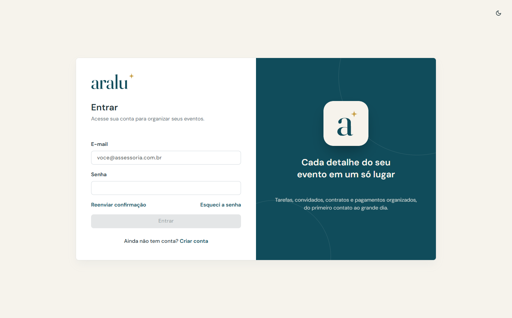
Tela de entrada.
A tela Hoje
Depois de entrar, você cai na tela Hoje. Ela é o seu ponto de partida diário: mostra tarefas para hoje, atrasadas e da semana, cobranças a fazer, respostas de convidados, pagamentos a fornecedores, o próximo evento e os números do funil. Numa conta nova, quase tudo está zerado e aparece o quadro Configure sua conta.
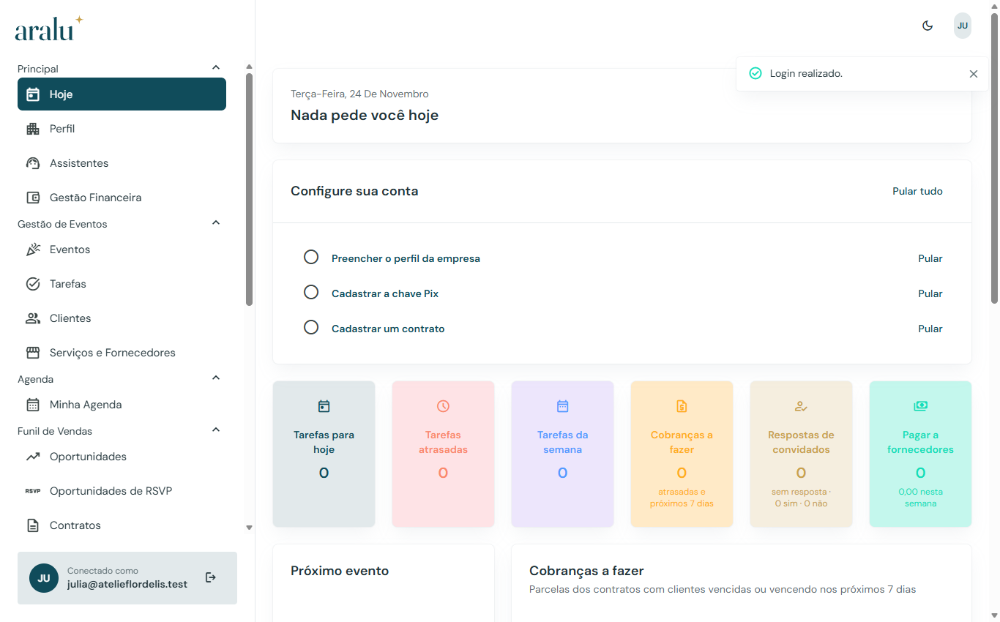
Hoje, numa conta recém-criada, com o quadro “Configure sua conta”.
Observe os três itens do quadro: Preencher o perfil da empresa, Cadastrar a chave Pix e Cadastrar um contrato. Cada um leva à tela certa.
Se quiser deixar algum para depois, clique em Pular ao lado dele, ou em Pular tudo. Neste manual, vamos fazer os três nos próximos capítulos.
Resultado esperadoVocê está dentro da Aralu, vê o menu lateral completo e a tela Hoje com o quadro de configuração.
Checklist do capítulo 1
Conta criada e e-mail confirmado
Entrei e vi a tela Hoje
Encontrei os grupos do menu lateral
Parte 1 · Capítulo 2O perfil da assessoria
ContextoAntes de atender qualquer casal, Helena quer que o nome e a logo do Ateliê apareçam nas propostas, contratos e cobranças. Esses dados ficam no Perfil e são puxados automaticamente pelos documentos (por exemplo, o contrato preenche sozinho o nome, o CNPJ e o endereço da contratada).
ObjetivoPreencher os dados da empresa, o endereço, a chave Pix e enviar a logo.
No menu, abra Principal › Perfil (ou clique em Preencher o perfil da empresa na tela Hoje).
Em Informações pessoais, preencha os campos da tabela abaixo.
Em Endereço, digite o CEP: a Aralu completa endereço, bairro, cidade e estado. Complete Número e Complemento.
Em Recebimentos, preencha a Chave Pix. Ela vai junto na mensagem de “Cobrar” enviada aos clientes.
Clique em Enviar foto e escolha a logo do Ateliê.
Clique em Salvar.
Campo
Valor
Nome da empresa
Ateliê Flor de Lis Cerimonial
Responsável
Helena Duarte
CPF ou CNPJ
11.222.333/0001-81 (digite só os números)
Celular
(11) 98765-4321
Nascimento
12/03/1988
CEP
01310-100 → Avenida Paulista, Bela Vista, São Paulo/SP
Número / Complemento
1578 / Conjunto 42
Chave Pix
contato@atelieflordelis.test
Foto
A logo da empresa (imagem)
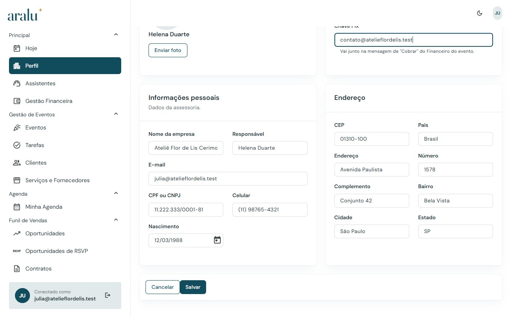
Perfil preenchido: o CEP completou o endereço.
DicaO campo E-mail mostra o e-mail de acesso da conta. O CPF ou CNPJ é um campo único: digite só os números, a formatação é automática.
Resultado esperadoO nome “Helena Duarte” e a logo aparecem no rodapé do menu lateral. Na tela Hoje, os itens de perfil e Pix ficam concluídos.
Checklist do capítulo 2
Dados da empresa salvos
CEP completou o endereço
Chave Pix cadastrada
Logo enviada
Parte 1 · Capítulo 3O catálogo comercial
ContextoHelena vende dois pacotes. Ela quer cadastrá-los para escolher na hora de registrar um interessado, e quer deixar pronto o texto padrão das propostas e o contrato. Assim, quando o primeiro casal aparecer, basta escolher.
ObjetivoCadastrar os Modelos de Serviços, o Modelo de Orçamento e o Modelo de Contrato.
3.1 Modelos de Serviços
Abra Modelos › Modelos de Serviços.
Clique em Novo Modelo de Serviço/Produto.
Preencha Nome, Descrição (até 200 caracteres) e Valor, e clique em Salvar.
Repita para o segundo serviço.
Nome
Descrição
Valor
Assessoria completa
Planejamento do casamento do início ao fim: fornecedores, cronograma, convidados e coordenação no dia.
R$ 18.000,00
Assessoria do dia
Coordenação do casamento no dia, com reuniões de alinhamento nos 60 dias anteriores.
R$ 6.500,00
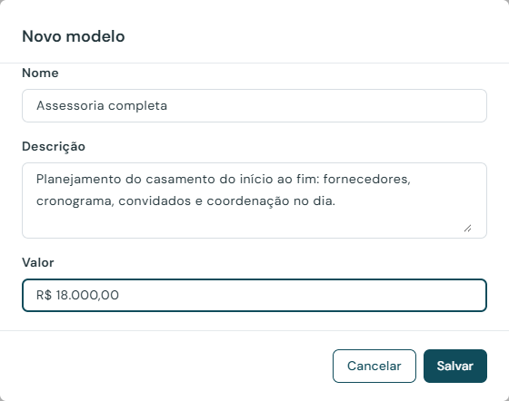
Cadastro de um serviço.
3.2 Modelo de Orçamento
É o texto que o casal lê ao abrir a proposta. Ele usa tags entre chaves duplas, como {{data_evento}}, que a Aralu troca pelos dados reais da oportunidade.
Abra Modelos › Modelo de Orçamento e clique em Novo Modelo de Orçamento.
Em Nome, digite “Proposta de casamento”.
No campo Texto, escreva a mensagem. Para inserir uma tag, clique no botão com o nome dela logo abaixo do editor (por exemplo, {{valor}}). O editor permite negrito, itálico, listas e links.
Se quiser, ajuste Cor primária e Cor secundária.
Em Tela de aceite (opcional), escreva uma apresentação da empresa: ela aparece para o cliente na página da proposta.
Clique em Salvar.
Campo
Conteúdo
Texto
Olá, {{nome_oportunidade}}! Foi um prazer conhecer vocês. Segue a nossa proposta de assessoria para o {{tipo_evento}} em {{data_evento}}, com {{convidados}} convidados, cerimônia em {{local_cerimonia}} e recepção em {{local_recepcao}}. Investimento: {{valor}}. Proposta válida até {{validade}}. Com carinho, {{nome_assessoria}}.
Tela de aceite
Por que a Flor de Lis? Há 10 anos cuidamos de cada detalhe para que o casal só se preocupe em viver o grande dia. “A Helena tirou todo o peso das nossas costas.” (Ana e Pedro, 2025)
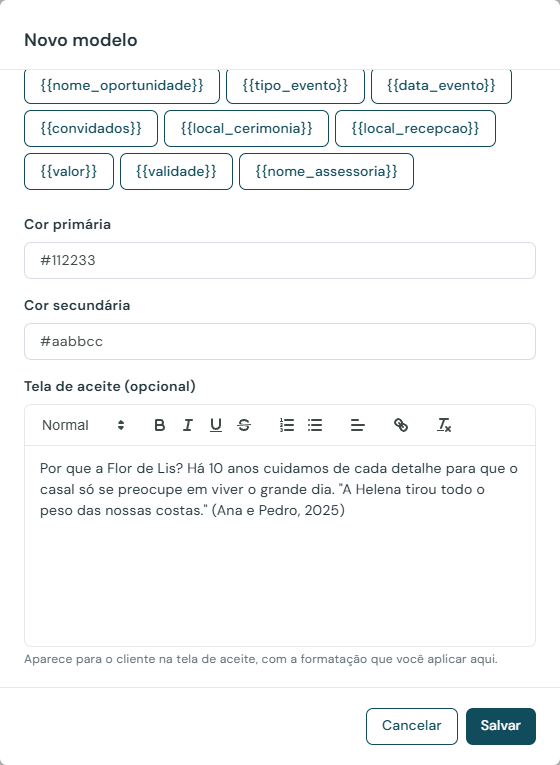
Modelo de orçamento com tags e texto da tela de aceite.
DicaA tag {{nome_oportunidade}} traz o nome dado à oportunidade (no nosso caso, “Casamento Beatriz e Gustavo”). Escolha o nome da oportunidade pensando em como ele vai aparecer no texto.
3.3 Modelo de Contrato
Abra Modelos › Modelos de Contrato e clique em Novo modelo.
Em Nome, digite “Contrato de assessoria de casamento”.
Em Como você quer criar o modelo?, escolha Escrever na plataforma. (A outra opção, Enviar meu documento Word, serve para quem já tem o contrato em Word.)
Clique em Como funciona para ler as orientações. No fim da janela, clique em Usar este exemplo no texto: a Aralu preenche o Texto do contrato com um modelo pronto, com quadro-resumo, cláusulas e espaço para assinatura.
Em Logo e Imagem de fundo, clique em Escolher imagem (JPG, PNG ou WebP, até 5 MB). A logo fica centralizada no topo; o fundo cobre a folha com transparência.
Para acrescentar um dado, clique no ponto do texto e use Inserir tag no cursor: digite parte do nome (por exemplo “cpf” ou “parcelas”) e escolha a tag. O botão ? abre a tabela com todas as tags, de onde cada uma vem e um exemplo.
Clique em Live Preview para ver, ao lado, “Como chega ao cliente”. Use Tela cheia para ler com mais espaço.
Clique em Salvar.
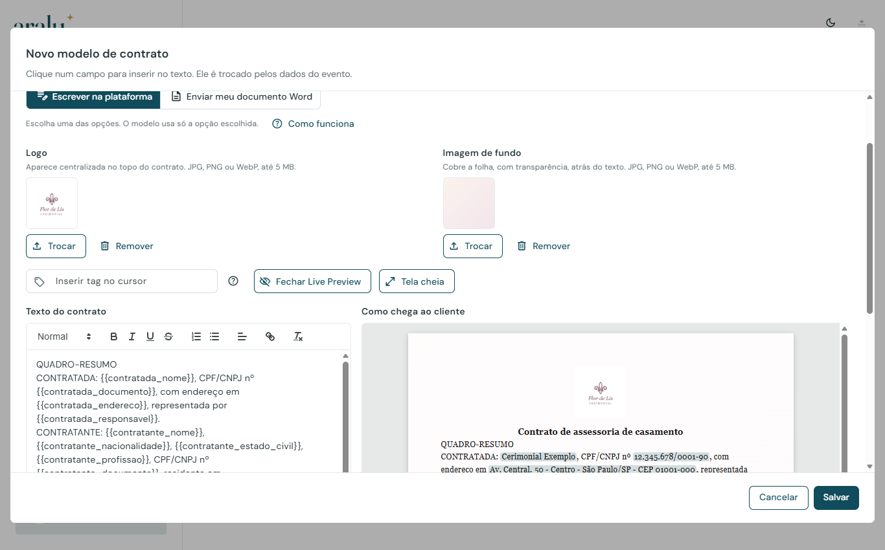
Modelo de contrato com logo, fundo e Live Preview.
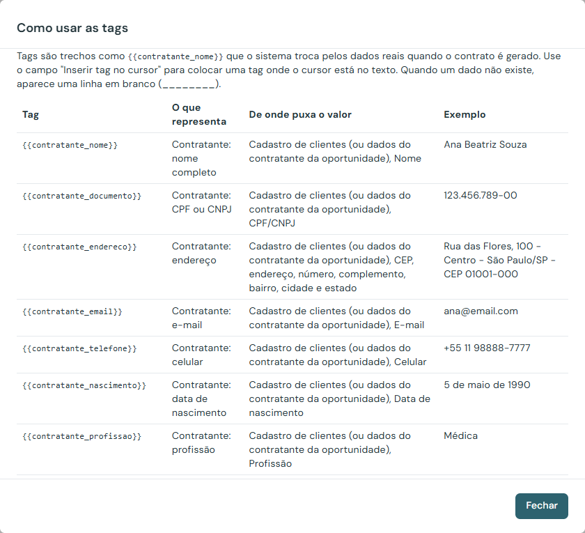
Ajuda sobre as tags: o que cada uma representa e de onde puxa o valor.
Resultado esperadoDois serviços, um modelo de orçamento e um modelo de contrato cadastrados. Na tela Hoje, “Cadastrar um contrato” fica concluído. Esses três itens serão usados nos capítulos 7, 10 e 12.
Checklist do capítulo 3
“Assessoria completa” e “Assessoria do dia” cadastrados
“Proposta de casamento” salva, com tags
Contrato com logo e fundo salvo
Vi o Live Preview
Parte 1 · Capítulo 4Serviços, fornecedores e modelos de trabalho
ContextoEm todo casamento a Helena contrata os mesmos tipos de serviço, trabalha com fornecedores de confiança e usa os mesmos questionários, roteiros e mensagens. Cadastrar tudo isso agora vai poupar trabalho em cada novo evento.
ObjetivoCadastrar os serviços da conta, os fornecedores e os modelos de briefing, roteiro, cronograma, inspirações e mensagens.
4.1 Serviços da conta
São os tipos de serviço que um evento contrata (buffet, fotografia etc.). Não confunda com os Modelos de Serviços do capítulo 3, que são os pacotes que a Helena vende.
Abra Gestão de Eventos › Serviços e Fornecedores e clique na aba Serviços da conta.
Clique em Adicionar serviço e digite um serviço ou vários, separados por vírgula. Também dá para importar um arquivo .txt (separado por vírgula) ou .csv/.xlsx (um serviço por linha, sem cabeçalho); os nomes vão para o campo para você revisar antes de criar.
Clique em Criar.
Nomes
Buffet, Fotografia, Decoração, Música e DJ, Bolo e doces, Vestido da noiva
4.2 Fornecedores
Volte para a aba Fornecedores e clique em Novo fornecedor.
Para cadastrar vários de uma vez, clique em Importar planilha, baixe o modelo, preencha a aba Fornecedores (nome e serviços obrigatórios) e, se quiser, a aba Dados bancários. Apague as linhas de exemplo e envie o arquivo: se houver erro, nada é importado e a tela lista cada linha a corrigir.
Na aba Dados, preencha Nome e, em Serviços, digite o nome do serviço e escolha na lista. (Se o serviço não existir, a lista oferece Criar novo serviço.)
Preencha Razão social, Responsável, Preço de e Preço até. O primeiro telefone e o primeiro e-mail já aparecem abertos; para mais contatos, use o ícone + à direita do campo.
As outras abas são opcionais: Redes sociais (site, Instagram…), Endereço, Dados bancários (banco, agência, conta, Pix), Orçamentos, Diferencial, Inf. gerais e Portfólio.
Clique em Salvar. Repita para os quatro fornecedores.
Nome
Serviço
Responsável
Preço de / até
Telefone
Instagram
Buffet Sabor & Arte
Buffet
Carlos Menezes
35.000 / 60.000
(11) 93333-4444
@saborearte.buffet
Foto Luz Fotografia
Fotografia
Marcos Tavares
8.000 / 15.000
(11) 94444-5555
@fotoluz
Jardim Secreto Decorações
Decoração
Patrícia Lima
15.000 / 30.000
(11) 95555-6666
@jardimsecretodecor
DJ Leo Batista
Música e DJ
Leonardo Batista
4.000 / 7.000
(11) 96666-7777
@djleobatista
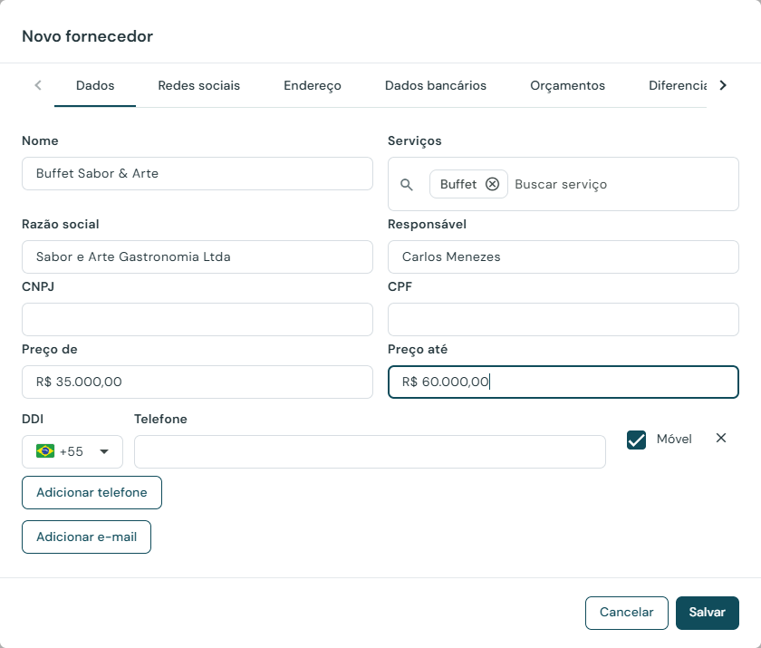
Cadastro de fornecedor, aba Dados.
DicaFornecedor com cadastro parcial aparece na lista com o selo Incompleto. Você pode completar depois pelo ícone de editar.
4.3 Modelo de Briefing
O briefing é o questionário da primeira conversa. Será usado com a Beatriz no capítulo 8.
Abra Modelos › Modelos de Briefing e clique em Novo Modelo de Briefing.
Para trazer um questionário pronto, clique em Importar planilha, baixe o modelo e preencha a aba Briefing com uma pergunta por linha e a seção ao lado. Apague as linhas de exemplo, dê um nome ao modelo e envie o arquivo: se houver erro, nada é importado e a tela lista cada linha a corrigir.
Preencha Nome. As seções ficam na coluna da esquerda e a seção escolhida aparece à direita.
Clique em + Seção e preencha o título e, se quiser, a descrição.
Escreva cada pergunta na lista Perguntas: Enter cria a próxima, e a alça à esquerda arrasta para reordenar. Clique em Salvar.
Campo
Valor
Nome
Primeira conversa
Seção / Descrição
Sobre o casamento / Perguntas para conhecer o casal e o sonho deles.
Perguntas
Qual a data desejada? · Quantos convidados vocês imaginam? · Qual o estilo da festa? · Qual o orçamento total previsto? · O que não pode faltar de jeito nenhum?
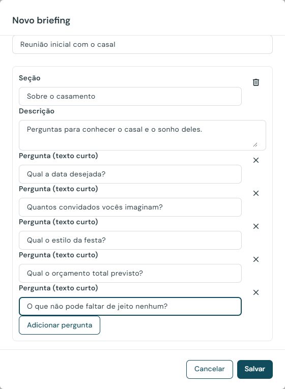
Modelo de briefing com cinco perguntas.
4.4 Modelo de Roteiro
Abra Modelos › Modelos de Roteiro e clique em Novo Modelo de Roteiro.
Preencha Nome. Os momentos ficam na coluna da esquerda: clique em + Momento e, à direita, preencha o título, Horário e Música. Escreva os itens do momento na lista Itens (Enter cria o próximo; a alça arrasta para reordenar).
Clique em Salvar.
Para trazer um roteiro pronto, clique em Importar planilha, baixe o modelo e preencha a aba Roteiro com um item por linha e o momento ao lado (Horário no formato 15:30 e Música basta preencher em uma linha do momento). Apague as linhas de exemplo, dê um nome ao modelo e envie o arquivo: se houver erro, nada é importado e a tela lista cada linha a corrigir.
Nome
Seção
Horário
Música
Roteiro da cerimônia
Entrada do cortejo
16:30
Canon em Ré - Pachelbel
Entrada da noiva
16:40
A Thousand Years - versão instrumental
4.5 Modelo de Cronograma
Abra Modelos › Modelos de Cronograma e clique em Novo Modelo de Cronograma.
Preencha Título e Descrição. Para cada horário, clique em + Item na coluna da esquerda e, à direita, preencha o rótulo, a Descrição (o que preencher ou checar naquele item), Hora, Responsável (Organizador, Assistente ou Cliente) e Recado aos fornecedores (a Data é opcional).
Clique em Salvar.
Para trazer um cronograma pronto, clique em Importar planilha, baixe o modelo e preencha a aba Cronograma com um item por linha, na ordem. Apague as linhas de exemplo, dê um título ao modelo e envie o arquivo: se houver erro, nada é importado e a tela lista cada linha a corrigir.
Rótulo
Hora
Responsável
Recado fornecedores
Chegada da decoração
09:00
Assistente
Montagem liberada a partir das 9h
Making of da noiva
13:00
Cliente
Hotel Jardins, suíte 1203
Cerimônia
16:30
Organizador
Celebrante chega às 16h
Título: Cronograma do grande dia. Descrição: Horários de montagem e do evento para equipe e fornecedores.
4.6 Modelo de Inspirações
Abra Modelos › Modelos de Inspirações e clique em Novo Modelo de Inspirações.
Preencha Nome e escreva cada link na lista Imagens (URL): Enter cria o próximo, e + Adicionar URL também. Clique em Salvar.
Abra Modelos › Modelos de Mensagens e clique em Novo Modelo de Mensagem.
Preencha Nome e Texto. Clique no texto onde o dado deve entrar, abra Inserir tags no cursor, marque uma ou mais tags (como {{nome_convidados}} e {{link_convite}}) e feche a lista. O ícone ? ao lado explica cada tag. Clique em Salvar.
Nome
Texto
Convite para confirmar presença
Olá, {{nome_convidados}}! Com muita alegria convidamos você para o {{nome_evento}}, em {{data_evento}} às {{hora_evento}}, no {{local_cerimonia}}. Confirme sua presença até {{prazo_rsvp}} pelo link: {{link_convite}}
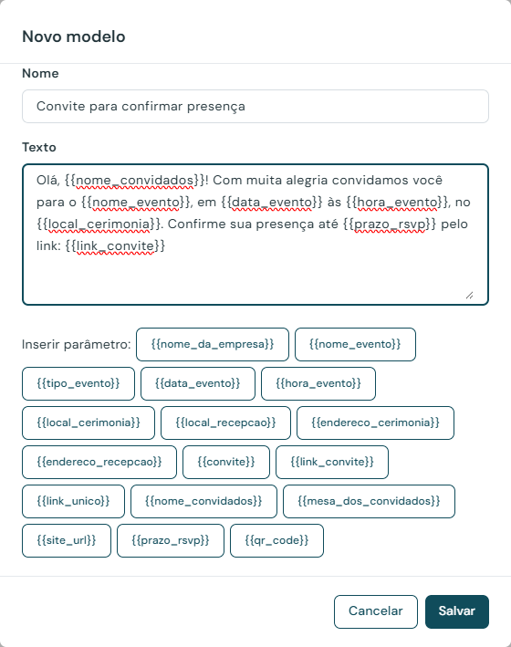
Modelo de mensagem com parâmetros.
Resultado esperadoSeis serviços da conta, quatro fornecedores e um modelo de cada tipo (briefing, roteiro, cronograma, inspirações e mensagens). Todos aparecem nas listas das telas correspondentes, com ícones para editar, clonar e excluir.
Checklist do capítulo 4
Serviços da conta criados de uma vez
Quatro fornecedores cadastrados
Briefing “Primeira conversa”
Roteiro, cronograma, inspirações e mensagem criados
Parte 1 · Capítulo 5O modelo de evento
ContextoTodo casamento da Helena tem as mesmas tarefas (fechar buffet, degustação, enviar convites…) com prazos parecidos, contados a partir da data do casamento. Com um modelo de evento, ela cria tudo isso num clique quando fechar um novo casamento (capítulo 15).
ObjetivoCriar o modelo “Casamento completo” com serviços, valores estimados, tarefas com prazo e os modelos do capítulo 4 vinculados.
Abra Modelos › Modelos de Evento e clique em Novo Modelo de Evento.
Preencha Nome = “Casamento completo”, Tipo = Casamento, e clique em Criar. O editor do modelo abre na aba Serviços e tarefas.
Na aba Serviços e tarefas, clique em Adicionar serviços, marque os serviços da tabela e confirme. Cada serviço vira um bloco que abre e fecha. No menu do bloco (⋮), use Valor estimado para informar quanto o serviço costuma custar.
Para cada tarefa, clique em Adicionar tarefa dentro do bloco do serviço (ou em Nova tarefa, no topo, para uma tarefa sem serviço). O formulário é o mesmo da tarefa do evento: preencha Título, Responsáveis e Prioridade. Em Prazo, escolha Relativo ao evento e informe a quantidade, a unidade (dias, semanas, meses ou No dia do evento) e se é antes ou depois.
Clique em Salvar no cabeçalho. Enquanto não salvar, o cabeçalho avisa “Alterações não salvas”.
Para incluir várias tarefas de uma vez, clique em Adicionar em massa. A janela mostra uma grade (Tarefa, Serviço, Prazo, Responsáveis, Prioridade, Descrição) que pode ser preenchida com + Linha, com Colar lista (uma tarefa por linha) ou com Enviar planilha (.xlsx ou .csv; use Baixar planilha modelo para ver o formato e o ? para a ajuda). A grade já é a prévia: confira e clique em Adicionar N tarefas. Serviço que ainda não existe aparece como “Serviço novo, será cadastrado”.
Nas abas Briefings, Roteiros, Inspirações e RSVP e Mensagens, clique em Adicionar…, marque o modelo correspondente e confirme.
Clique em Salvar.
Serviço
Valor estimado
Buffet
R$ 45.000,00
Decoração
R$ 22.000,00
Fotografia
R$ 10.000,00
Música e DJ
R$ 5.000,00
Bolo e doces
R$ 6.000,00
Tarefa
Serviço
Prazo (relativo ao evento)
Fechar buffet
Buffet
10 meses antes
Degustação do buffet
Buffet
6 meses antes
Enviar convites
Sem serviço
3 meses antes
Prova final do vestido
Sem serviço
2 semanas antes
Reunião de alinhamento final
Sem serviço
7 dias antes (a Aralu mostra “1 semana antes”)
Adicionar em massa › Colar lista (sem prazo, sem serviço): Confirmar horários com fornecedores · Montar mapa de mesas
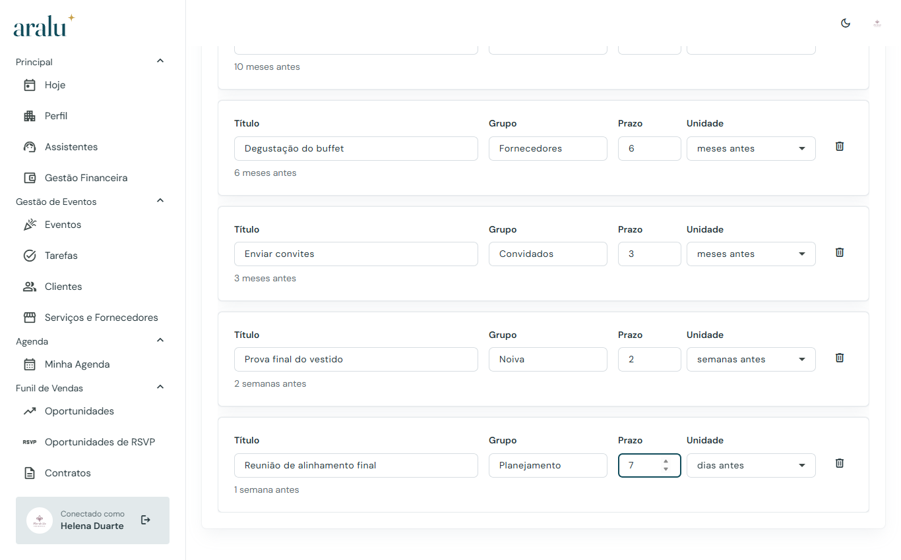
Aba Serviços e tarefas do modelo: cada serviço com suas tarefas e prazos relativos à data do evento.
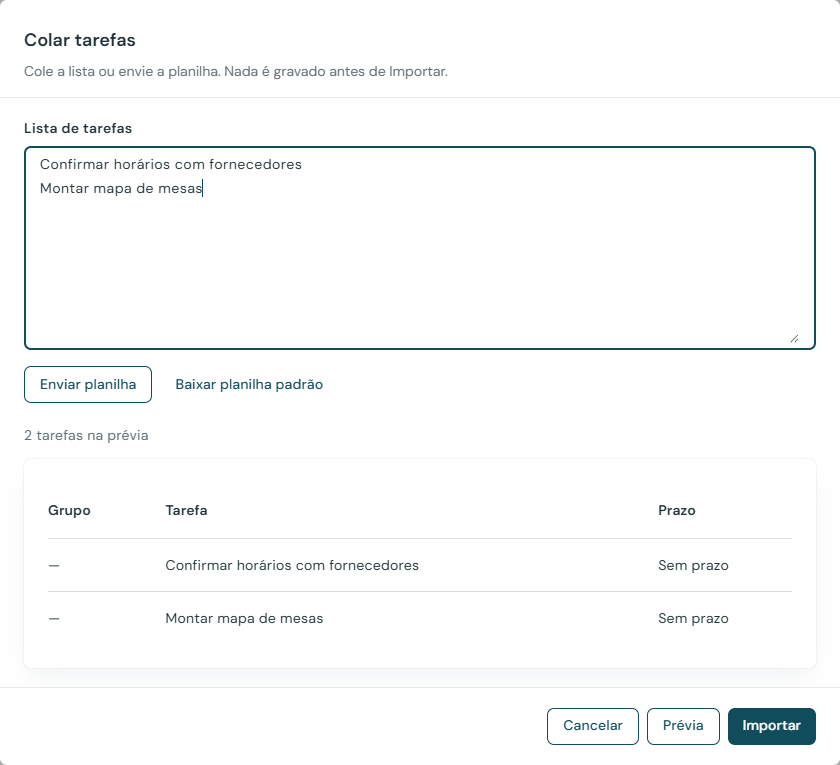
Adicionar tarefas em massa: a grade é a prévia do que será incluído.
Resultado esperadoNa lista de Modelos de evento aparece “Casamento completo · 7 tarefas · 5 serviços”.
Checklist do capítulo 5
Modelo criado com 5 serviços e valores estimados
5 tarefas com prazo relativo + 2 em massa
Briefing, roteiro, inspiração e mensagem vinculados
Parte 1 · Capítulo 6Os estágios do funil
ContextoO funil de vendas mostra cada interessado como um cartão num quadro, em colunas (estágios). A conta já vem com Contato inicial, Orçamento enviado, Contratado e Descartado. Helena sempre faz uma reunião antes de mandar orçamento, então quer uma coluna para isso.
ObjetivoCriar o estágio “Reunião marcada” entre Contato inicial e Orçamento enviado.
Abra Funil de Vendas › Oportunidades e clique em Gerenciar estágios.
Clique em Novo estágio e digite “Reunião marcada”. Se quiser, escolha a cor no seletor ao lado.
Arraste o novo estágio pela alça (⋮⋮) até ficar entre Contato inicial e Orçamento enviado.
Clique em Salvar.
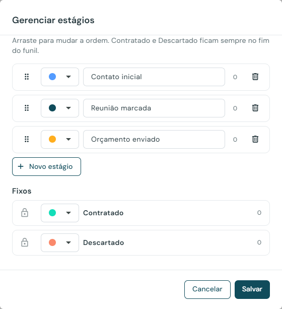
Gerenciar estágios: Contratado e Descartado são fixos e ficam sempre no fim.
Regras dos estágiosContratado e Descartado não podem ser renomeados nem excluídos. Não é possível ter dois estágios com o mesmo nome. Para excluir um estágio que tem cartões, a Aralu pede para onde movê-los.
Resultado esperadoO quadro de Oportunidades mostra cinco colunas: Contato inicial, Reunião marcada, Orçamento enviado, Contratado e Descartado. A casa está pronta para receber clientes.
Checklist do capítulo 6
“Reunião marcada” criada
Na ordem certa no quadro
Parte 2 · Capítulo 7Beatriz entra em contato
ContextoHelena coloca o link do formulário de contato na bio do Instagram. No mesmo dia, Beatriz Monteiro preenche: vai casar com Gustavo e espera cerca de 180 convidados. Logo depois, Larissa Prado manda uma mensagem pelo direct e Helena cadastra o contato à mão.
ObjetivoReceber um lead pelo formulário público e cadastrar outro manualmente.
7.1 O formulário público (Link do lead)
Em Oportunidades, clique em Link do lead. O endereço do formulário é copiado; cole-o no Instagram, no site ou no WhatsApp.
Para simular a Beatriz, abra o link numa janela anônima do navegador (sem estar conectada à Aralu).
Preencha o formulário Solicitar orçamento e clique em Enviar.
Campo
Valor
Seu nome
Beatriz Monteiro
Telefone
(11) 91234-5678
E-mail
beatriz.monteiro@email.test
Tipo de evento
Casamento
Convidados
180
Cidade / UF
São Paulo / SP
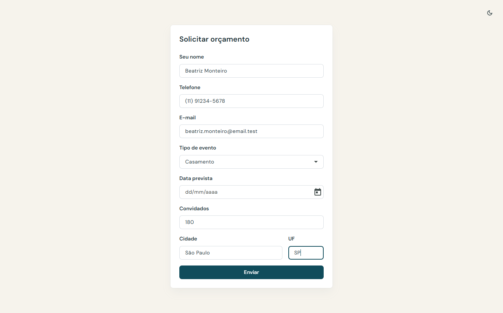
Formulário público preenchido pela Beatriz.
Ao enviar, a Beatriz vê a mensagem “Recebemos o seu contato. Em breve a assessoria retorna.”
7.2 Nova oportunidade manual
Em Oportunidades, clique em Nova oportunidade.
Preencha os dados da tabela e clique em Salvar. Sem nome ou sem contato, a oportunidade não é gravada.
Campo
Valor
Nome da oportunidade
Casamento Larissa e Felipe
Contato › Nome / Telefone
Larissa Prado / (11) 97777-8888
Evento › Tipo / Convidados
Casamento / 120
Comercial › Origem
Instagram
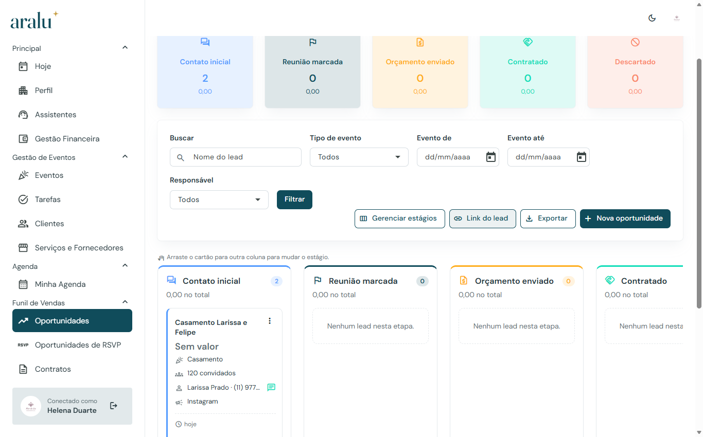
Os dois leads em Contato inicial. O da Beatriz traz a origem “Formulário do site”.
Contato repetidoSe você cadastrar alguém cujo telefone ou e-mail já está no funil, a Aralu avisa “Esse contato já está no funil”, sem bloquear. Pelo formulário público, o cartão ganha o selo “Contato repetido”.
Resultado esperadoDois cartões na coluna Contato inicial: “Casamento Beatriz Monteiro” (Formulário do site) e “Casamento Larissa e Felipe” (Instagram).
Checklist do capítulo 7
Link do lead copiado e testado
Lead da Beatriz chegou sozinho
Lead da Larissa cadastrado à mão
Parte 2 · Capítulo 8A primeira conversa
ContextoHelena liga para a Beatriz. Descobre a data (15/05/2027), os locais e que o Gustavo também participa das decisões. Ela registra tudo na oportunidade, aplica o briefing durante a conversa e agenda os próximos contatos.
ObjetivoCompletar a oportunidade, aplicar o briefing, marcar o retorno e criar tarefas do funil.
8.1 Completar a oportunidade
No cartão da Beatriz, clique no menu ⋮ e em Editar. A janela tem os blocos Contato, Evento, Locais, Comercial e Dados para contrato.
Troque o Nome da oportunidade e marque É o contratante (quem assina o contrato) na Beatriz: nome, e-mail e celular dela passam para “Dados para contrato”. Só um contato pode ser o contratante.
Clique em + Contato e cadastre o Gustavo.
Preencha Evento, Locais (o CEP completa o endereço) e Comercial conforme a tabela, e clique em Salvar.
Editando a oportunidade: contatos, evento e horários.
Aviso de agendaSe a data prevista coincidir com um compromisso da Minha Agenda, aparece “Já há compromisso…”. É só um aviso: não impede salvar.
8.2 Aplicar o briefing
No cartão, clique em ⋮ › Briefing.
Em Modelo de briefing, escolha “Primeira conversa” e clique em Aplicar.
Anote as respostas e clique em Salvar respostas.
Pergunta
Resposta
Qual a data desejada?
15 de maio de 2027, sábado à tarde
Quantos convidados vocês imaginam?
Cerca de 180 pessoas
Qual o estilo da festa?
Clássico, ao ar livre, tons de verde e branco
Qual o orçamento total previsto?
Até R$ 150.000 no total
O que não pode faltar de jeito nenhum?
Pista de dança animada e doces finos
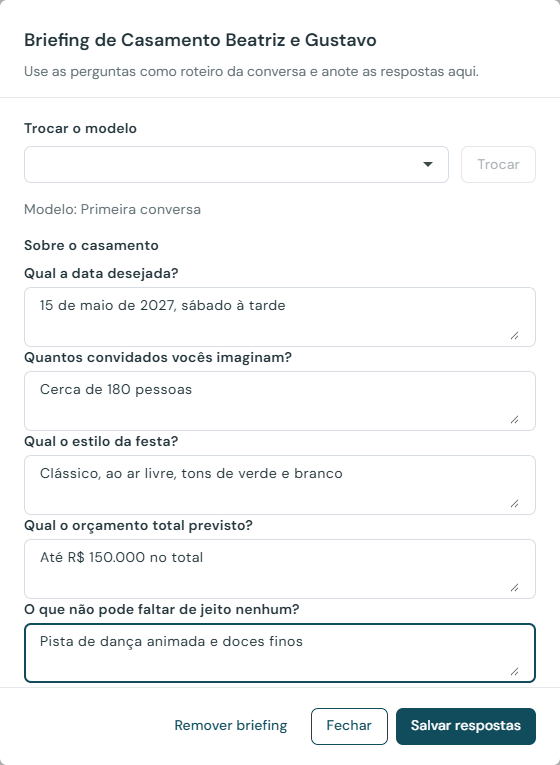
Briefing aplicado à oportunidade.
DicaEditar o modelo depois não muda o briefing já aplicado. Para trocar, use Trocar o modelo; para apagar, Remover briefing.
8.3 Tarefas do funil
Abra Funil de Vendas › Tarefas do Funil e clique em Adicionar tarefa.
Preencha Título, Oportunidade, Tipo (Reunião, Ligação, E-mail ou Tarefa), Responsáveis, Prazo e Observação, e clique em Salvar.
Título
Tipo
Prazo
Observação
Ligar para confirmar a reunião
Ligação
26/11/2026
Confirmar endereço do escritório.
Reunião de apresentação com Beatriz e Gustavo
Reunião
27/11/2026
Levar portfólio e exemplos de cronograma.
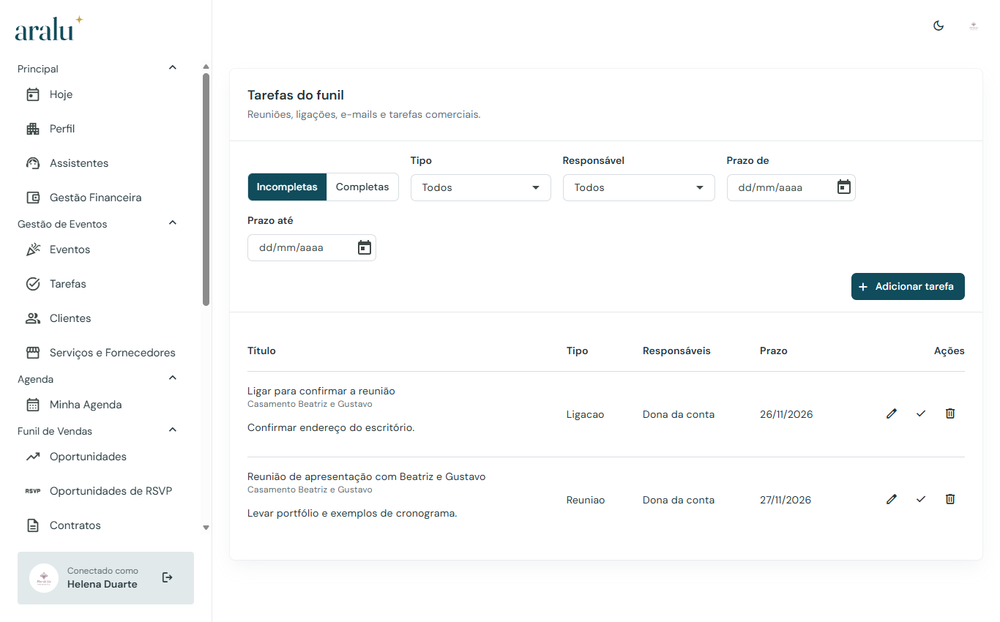
Tarefas do funil em Incompletas. O ícone ✓ conclui; concluídas vão para Completas.
As tarefas aparecem também na Minha Agenda e, no dia, na tela Hoje. Os filtros Tipo, Responsável e Prazo de/até ajudam a encontrar o que importa.
8.4 O retorno na tela Hoje
No dia marcado em Retornar em, a oportunidade aparece em Retornos do funil na tela Hoje. A data fica vermelha quando atrasada, amarela quando é hoje e neutra quando é futura. Depois de falar com a cliente, clique em Retornei: a Aralu pede a próxima data de retorno (ou “sem próximo retorno”). O mesmo pode ser feito pelo cartão, em ⋮ › Marcar retorno.
Resultado esperadoO cartão mostra “Casamento Beatriz e Gustavo”, R$ 18.000,00, data do casamento e “retornar qua, 25/11 às 10:00”. O topo do quadro passa a mostrar 18.000,00 em negociação.
Checklist do capítulo 8
Gustavo adicionado e Beatriz marcada como contratante
Data, horários e locais preenchidos
Briefing respondido
Duas tarefas do funil criadas
Parte 2 · Capítulo 9Acompanhando a negociação
ContextoA reunião foi marcada. Helena move o cartão da Beatriz para a coluna certa e aproveita para conhecer as ferramentas de busca do quadro.
ObjetivoMover a oportunidade de estágio e usar busca, filtros e exportação.
Mova o cartão da Beatriz para Reunião marcada de uma destas três formas: arrastando o cartão; pelo menu ⋮ › Mover para Reunião marcada; ou pela ação rápida no pé do cartão (Reunião marcada →).
Observe que o total da coluna e o resumo no topo se atualizam.
Teste a busca: digite “Beatriz” em Buscar. Use também os filtros Tipo de evento, Evento de/Evento até e Responsável, e clique em Filtrar.
Clique em Exportar: a Aralu baixa uma planilha só com as oportunidades filtradas.
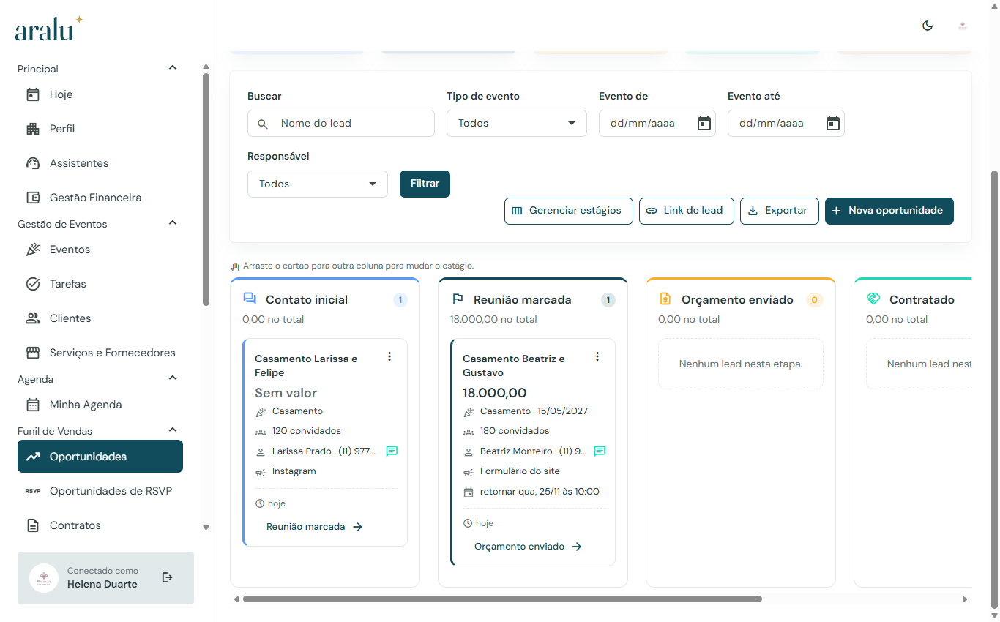
Beatriz em “Reunião marcada”.
Menu do cartãoO ⋮ reúne: Editar, Briefing, Mover para (cada estágio), Marcar retorno, Virar cliente e Excluir.
Checklist do capítulo 9
Cartão movido para Reunião marcada
Busca e filtros testados
Exportação baixada
Parte 2 · Capítulo 10Orçamento e proposta por link
ContextoA reunião foi ótima. Beatriz e Gustavo querem a Assessoria completa e pedem para pagar com entrada e o restante parcelado. Helena monta o orçamento e manda o link pelo WhatsApp. O casal abre a proposta no celular e aceita.
ObjetivoCriar o orçamento, definir as parcelas, enviar a proposta e registrar o aceite com os dados do contrato.
10.1 Criar o orçamento
Abra Funil de Vendas › Orçamentos e clique em Novo orçamento.
Em Oportunidade, escolha “Casamento Beatriz e Gustavo”; em Modelo, “Proposta de casamento”. O Conteúdo é preenchido com as tags já trocadas pelos dados da oportunidade.
Confira o Valor (R$ 18.000,00) e clique em Salvar.
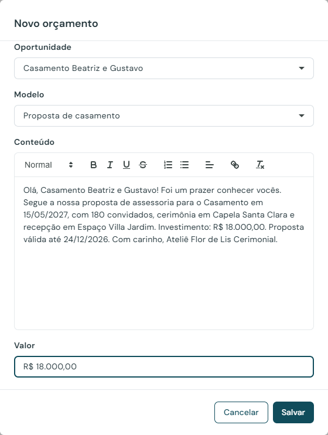
Novo orçamento a partir do modelo.
10.2 Parcelas
Na linha do orçamento, clique no ícone Parcelas.
Preencha conforme a tabela, marque Tem entrada e clique em Gerar parcelas. A Aralu divide o restante igualmente.
Campo
Valor
Número de parcelas
5
Vencimento da 1ª parcela
10/01/2027
Tem entrada
Marcado
Valor da entrada / Data da entrada
R$ 5.400,00 / 10/12/2026
Resultado: entrada de R$ 5.400,00 + 5 parcelas de R$ 2.520,00 (de jan a mai/2027)
10.3 Enviar a proposta
Clique no ícone Enviar proposta. A janela mostra o Link da proposta, válido por 30 dias.
Use Copiar link ou Enviar pelo WhatsApp.
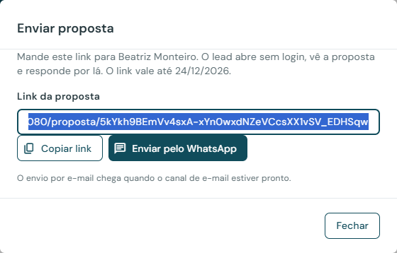
Enviar proposta: link, cópia e WhatsApp.
A oportunidade vai sozinha para Orçamento enviado, e o cartão diz “Proposta ainda não foi aberta”. Se você mesma abrir o link estando conectada, a página avisa que você está vendo como assessoria, e isso não conta como abertura.
10.4 O casal abre e aceita
Abra o link numa janela anônima (simulando a Beatriz). A página mostra a logo e o nome do Ateliê, o texto da proposta, a apresentação da tela de aceite, o valor e a Forma de pagamento.
Clique em Aceitar. Aparece “Para fechar, preencha mais dados para gerar o contrato”. Os campos com * são obrigatórios.
Preencha a tabela abaixo e clique em Confirmar.
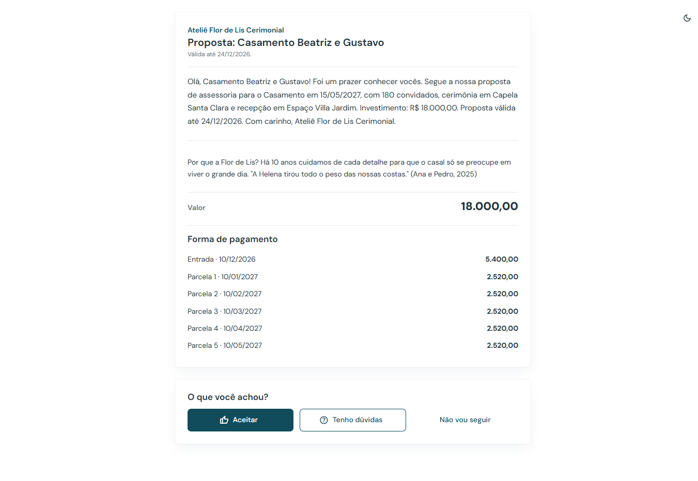
A proposta como o casal vê.
Campo
Valor
Nome completo / E-mail / Celular
Já vêm preenchidos da oportunidade
CPF/CNPJ
529.982.247-25
Nascimento
22/08/1994
Estado civil
Solteiro(a)
Nacionalidade / Profissão
Brasileira / Arquiteta
CEP
05415-030
Endereço / Número / Complemento
Rua Fradique Coutinho / 310 / Apto 82
Bairro / Cidade / Estado
Pinheiros / São Paulo / SP
AtençãoNa tela de aceite o CEP não completa o endereço: digite todos os campos. Se faltar algo, a página diz exatamente o que falta (por exemplo, “Falta: endereço, bairro, cidade, estado”).
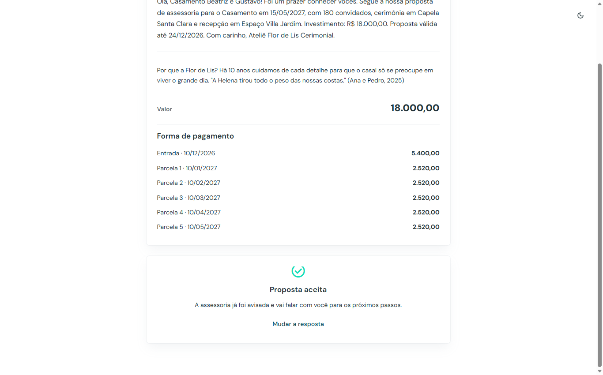
“Proposta aceita”: a assessoria já foi avisada.
Resultado esperadoNo quadro, o cartão da Beatriz mostra o selo Aceitou. O orçamento passa para a aba Respondidos em Orçamentos. A oportunidade não vai sozinha para Contratado: isso acontece no capítulo 13. Orçamento aceito não pode mais ser editado.
Outros caminhos da proposta
• Tenho dúvidas: o casal escreve a dúvida; ela aparece no cartão e o retorno da oportunidade vai para hoje.
• Não vou seguir: a proposta fica como recusada.
• Registrar resposta (ícone na lista de orçamentos): quando o casal responde por telefone, a Helena registra Aceitou, Tem dúvidas ou Não vai seguir.
• Se você alterar valor ou parcelas depois de enviar, o link continua o mesmo e a proposta volta a “não foi aberta”. Mudar o valor apaga as parcelas: gere de novo.
• Cancelar um orçamento faz o link mostrar “Esta proposta não está mais disponível”.
Checklist do capítulo 10
Orçamento criado do modelo
Entrada + 5 parcelas geradas
Link enviado
Proposta aceita com dados do contrato
Selo “Aceitou” no cartão
Parte 2 · Capítulo 11Uma negociação que não segue
ContextoLarissa responde que achou o valor acima do que pode pagar e decidiu não contratar assessoria.
ObjetivoDescartar a oportunidade registrando o motivo.
No cartão da Larissa, clique em ⋮ › Mover para Descartado (ou arraste para a coluna Descartado).
A janela Descartar oportunidade avisa que CPF/CNPJ, nascimento e endereço do contratante serão apagados.
Em Motivo do descarte, escolha Preço e clique em Descartar. Sem motivo, não é possível descartar.
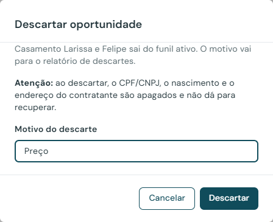
Descartar oportunidade.
Resultado esperadoLarissa está na coluna Descartado. O motivo entra no relatório de descartes (capítulo 23). Se ela voltar a procurar a Helena, basta mover o cartão para um estágio aberto: o motivo é limpo.
Checklist do capítulo 11
Larissa em Descartado com motivo “Preço”
Parte 2 · Capítulo 12O contrato
ContextoCom a proposta aceita e os dados da Beatriz completos, Helena gera o contrato a partir do modelo do capítulo 3, sem digitar nada.
ObjetivoGerar, conferir, registrar o envio e marcar o contrato como assinado.
Abra Funil de Vendas › Contratos e clique em Novo contrato.
Escolha a Oportunidade “Casamento Beatriz e Gustavo” e o Modelo “Contrato de assessoria de casamento”. O Conteúdo aparece com as tags. Clique em Salvar.
Na lista (aba Em andamento), clique em Ver contrato: a folha mostra logo, fundo e todos os dados preenchidos (contratada, contratante, evento, valor e parcelas). Use Imprimir para gerar o papel ou PDF.
Envie o contrato à Beatriz pelo canal de sua preferência e clique em Enviar contrato para registrar o envio. A Aralu não envia nada sozinha: ela apenas registra a data.
Quando o contrato voltar assinado, clique em Marcar como assinado.
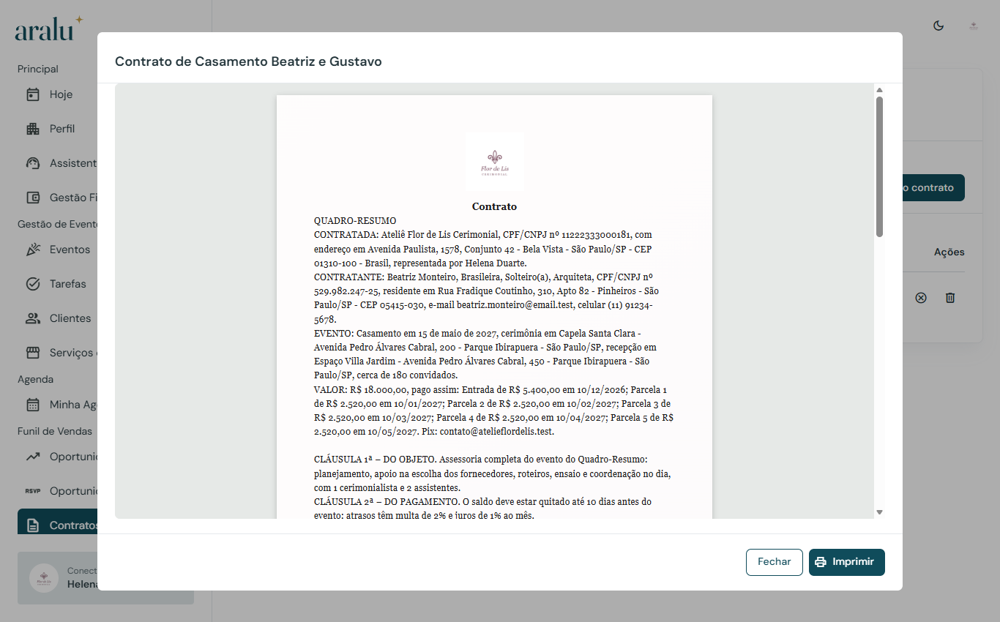
Contrato gerado, com os dados reais no lugar das tags.
Quando o contrato não é geradoSem orçamento aprovado, a Aralu avisa “Esta oportunidade ainda não tem orçamento aprovado…”. Sem dados do contratante (CPF/CNPJ, estado civil etc.), ela lista o que falta. Tag sem dado vira “________” para preencher à mão. Trocar a logo do modelo depois não altera contratos já gerados.
Resultado esperadoO contrato está na aba Assinados. Ele também passa a aparecer na Gestão Financeira (capítulo 14).
Checklist do capítulo 12
Contrato gerado com dados completos
Envio registrado
Marcado como assinado
Parte 2 · Capítulo 13Beatriz vira cliente
ContextoContrato assinado: é hora de transformar a oportunidade em cliente do Ateliê. O cadastro aproveita tudo o que já foi informado.
ObjetivoConverter a oportunidade em cliente e conhecer a tela Clientes.
No cartão da Beatriz, clique em Virar cliente (pé do cartão ou menu ⋮).
A janela Novo cliente abre preenchida com nome, CPF, nascimento, estado civil, nacionalidade, e-mail, celular e, na aba Endereço, o endereço.
Em Papel, escolha Noiva. Confira e clique em Salvar.
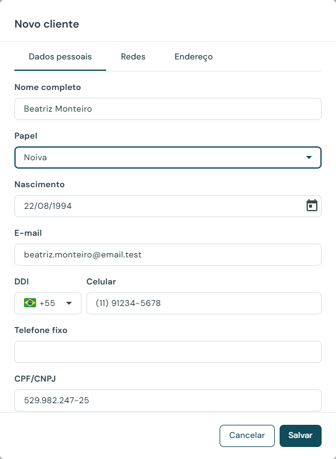
Cadastro de cliente já preenchido a partir da oportunidade.
Resultado esperadoA Aralu avisa que a Beatriz agora é cliente e que o lead foi para Contratado. No cartão aparecem o selo Cliente e o botão Criar evento. Em Gestão de Eventos › Clientes, Beatriz aparece com papel Noiva, e-mail e celular.
DicaDepois de virar cliente, editar a oportunidade não altera o cadastro do cliente. Para mudar dados da Beatriz, use Clientes › Editar. Os clientes não têm login: eles acompanham o evento pelo Link do cliente (capítulo 20).
Checklist do capítulo 13
Beatriz cadastrada como cliente (Noiva)
Oportunidade em Contratado
Parte 2 · Capítulo 14Gestão Financeira: recebendo da cliente
ContextoEm 10/12/2026 vence a entrada da Beatriz. Helena manda a cobrança com a chave Pix e, quando o dinheiro cai, registra o recebimento.
ObjetivoAcompanhar o contrato na Gestão Financeira, cobrar e registrar o recebimento.
Abra Principal › Gestão Financeira. Os cartões do topo mostram A receber no mês, Atrasadas, Contratado, Recebido e A receber. A lista mostra cada contrato com valor, recebido, saldo e parcelas.
Na linha do contrato, clique em Parcelas do contrato.
Na entrada, clique em Cobrar: o WhatsApp abre com o texto de cobrança e a chave Pix do Perfil.
Quando o pagamento chegar, clique em Recebi, preencha e clique em Registrar.
Campo
Valor
Valor recebido
R$ 5.400,00
Forma de pagamento
Pix
Data do recebimento
10/12/2026
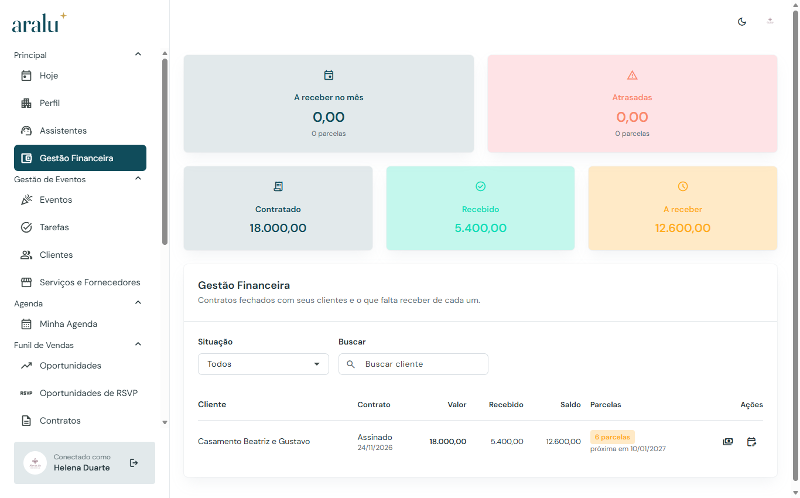
Gestão Financeira com o contrato da Beatriz.
Recursos extras
• É possível receber uma parcela em partes; receber mais do que o saldo não é permitido.
• Desfazer último recebimento corrige um registro errado.
• Refazer parcelamento substitui as parcelas, desde que ainda não haja recebimento (1 parcela = à vista).
• Parcelas vencidas aparecem em Atrasadas, e a tela Hoje mostra em Cobranças a fazer as parcelas atrasadas ou que vencem nos próximos 7 dias.
• O filtro Situação e a busca não alteram os cartões do topo.
Resultado esperadoRecebido R$ 5.400,00 e saldo de R$ 12.600,00 no contrato da Beatriz.
Checklist do capítulo 14
Contrato visível na Gestão Financeira
Cobrança aberta no WhatsApp
Entrada registrada
Parte 3 · Capítulo 15Nasce o evento
ContextoAgora começa o trabalho de produção. Helena cria o evento a partir da oportunidade, para não redigitar data, horário, locais e cliente, e aplica o modelo “Casamento completo”.
ObjetivoCriar o evento, aplicar o modelo e completar as informações.
15.1 Criar o evento
Em Oportunidades, no cartão da Beatriz (coluna Contratado), clique em Criar evento.
A janela Novo evento vem com “Dados trazidos da oportunidade”: tipo Casamento, nome, data, horário, convidados, locais e a cliente vinculada. Confira e clique em Criar evento.
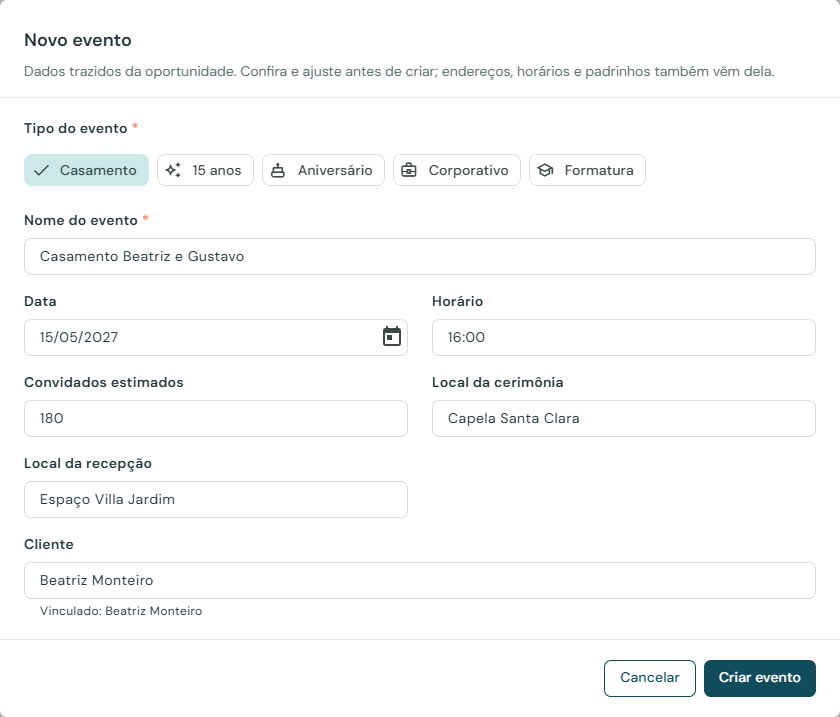
Novo evento com os dados da oportunidade.
Outra formaTambém é possível criar em Eventos › Novo evento (ou no + da barra do celular). Só o tipo e o nome são obrigatórios; o campo Cliente permite escolher um cliente já cadastrado ou cadastrar um novo ali mesmo.
15.2 Aplicar o modelo
O evento abre na aba Resumo. Em Tarefas do evento, clique em Aplicar modelo (ou use Mais › Aplicar modelo).
Escolha “Casamento completo”. A janela mostra quantos serviços e tarefas são novos e quantos já existem no evento (esses são ignorados). Clique em Aplicar.
As tarefas chegam ligadas aos seus serviços, com prazo relativo: se a data do casamento mudar, os prazos acompanham sozinhos. Aplicar de novo acrescenta só o que ainda não existe no evento.
15.3 Editar informações (e um pedido do casal)
Na reunião de alinhamento, Gustavo pede para registrar o nome dele, o orçamento total que o casal definiu (R$ 150.000) e os padrinhos.
No Resumo, clique em Editar. A janela tem as abas Informações gerais, Detalhes, Cerimônia e Recepção.
Preencha conforme a tabela e clique em Salvar evento.
Aba
Campo
Valor
Informações gerais
Nome do noivo
Gustavo Ramos
Informações gerais
Orçamento
R$ 150.000,00
Informações gerais
URL do site
https://beatrizegustavo.casar.test
Informações gerais
Tags
jardim
Informações gerais
Salvar na agenda
Marcado
Detalhes
Padrinhos
Ana Monteiro, Pedro Ramos, Júlia Costa, Rafael Lima
Detalhes
Damas e pajens
Sofia (5 anos) e Miguel (6 anos)
Ainda nessa janela você pode trocar a foto do evento, alterar a data, o horário e os Convidados estimados, e revisar os locais nas abas Cerimônia e Recepção. Ao trocar a data, a Aralu só pergunta se deve mover as tarefas com data exata; as de prazo relativo já acompanham a nova data.
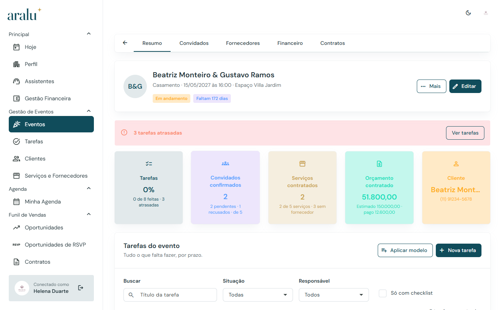
Resumo do evento: cabeçalho, alertas, cartões de acompanhamento e tarefas agrupadas por prazo.
Resultado esperadoO cabeçalho mostra “Beatriz Monteiro & Gustavo Ramos · Casamento · 15/05/2027” e quantos dias faltam. Os cartões indicam tarefas, convidados, serviços contratados, orçamento contratado (estimado R$ 150.000,00) e a cliente. As abas do evento são: Resumo, Convidados, Fornecedores, Financeiro e Contratos. Na oportunidade, o botão “Criar evento” vira um atalho “Evento”.
Checklist do capítulo 15
Evento criado da oportunidade
Modelo aplicado (7 tarefas, 5 serviços)
Noivo, orçamento e padrinhos registrados
Parte 3 · Capítulo 16As tarefas do dia a dia
ContextoBeatriz conta que ainda não escolheu o vestido. Helena cria uma tarefa com checklist dos ateliês a visitar. Como o casamento foi fechado com seis meses de antecedência, duas tarefas do modelo já nascem atrasadas e aparecem em destaque.
ObjetivoCriar e acompanhar tarefas do evento e conhecer a visão geral de Tarefas e a Minha Agenda.
16.1 Nova tarefa com checklist
No Resumo, clique em Nova tarefa.
Preencha os campos da tabela. Em Checklist, clique em Adicionar item para cada ateliê (cada item pode ter data e responsável próprios).
Clique em Salvar.
Campo
Valor
Título
Escolher vestido da noiva
Descrição
Visitar 3 ateliês com a Beatriz e a mãe dela.
Prazo
Data exata · 20/11/2026 (de propósito no passado, para ver o alerta)
Responsáveis / Prioridade
Organizador / Alta
Checklist
Ateliê Maria Bonita · Ateliê Seda Pura · Ateliê Véu de Noiva
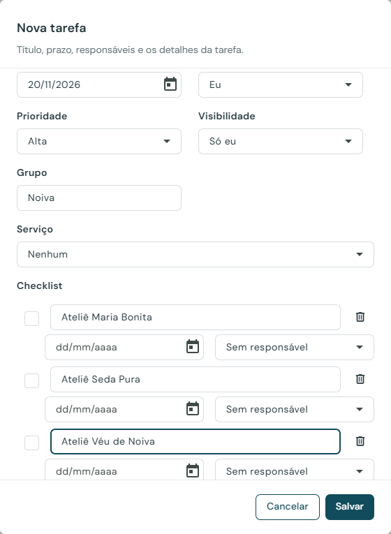
Nova tarefa com checklist.
A janela também tem Situação, Visibilidade e Serviço (com busca e “+ Adicionar serviço”; liga a tarefa a um serviço do evento: quando o fornecedor do serviço é contratado, as tarefas dele são concluídas).
16.2 Acompanhar
No Resumo aparece o alerta “N tarefas atrasadas”. Clique em Ver tarefas para filtrar só as atrasadas (“Ver todas” volta).
Expanda a checklist de uma tarefa e marque os itens à medida que forem feitos: os cartões do topo se atualizam sozinhos.
Use Buscar, Situação, Responsável e Só com checklist para filtrar. Os ícones da linha editam ou excluem a tarefa. Para incluir várias de uma vez, use Adicionar em massa, a mesma janela do modelo (no evento, o prazo aceita também data exata).
16.3 Tarefas de todos os eventos e a agenda
Abra Gestão de Eventos › Tarefas: estão ali as tarefas de todos os eventos, com filtros e três visões: Lista, Quadro por situação e Quadro por dia. O nome do evento leva ao Resumo.
Abra Agenda › Minha Agenda: veja o mês com eventos, compromissos e tarefas. Alterne entre Mês, Semana, Dia e Lista.
Clique em Novo compromisso (ou no + de um dia) e cadastre a visita técnica abaixo.
Descrição
Data
Hora
Visita técnica ao Espaço Villa Jardim
03/12/2026
14:30
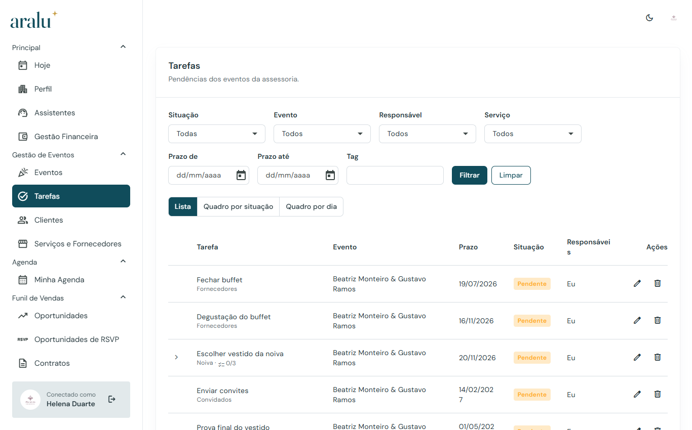
Tarefas de todos os eventos, em lista.
Resultado esperado8 tarefas no evento, com alerta de atrasadas. A tela Hoje passa a mostrar quantas tarefas pedem você hoje e quantas estão atrasadas. A agenda mostra a visita técnica em 03/12.
Checklist do capítulo 16
Tarefa com checklist criada
Filtro de atrasadas testado
Visões de Tarefas e Minha Agenda conhecidas
Compromisso cadastrado
Parte 3 · Capítulo 17Fornecedores do evento
ContextoDegustação aprovada! Helena fecha o Buffet Sabor & Arte por R$ 42.000 (abaixo do estimado) e a Foto Luz por R$ 9.800. Ela acompanha quanto do orçamento de R$ 150.000 já foi comprometido.
ObjetivoAcompanhar o orçamento, vincular fornecedores aos serviços e marcá-los como contratados com o contrato assinado.
Abra a aba Fornecedores do evento. No topo, os indicadores Orçamento, Estimado, Contratado, Prova real e Por convidado, e os gráficos “Contratado e estimado frente ao orçamento” e “Por serviço”.
Abaixo, cada serviço é uma linha que abre e fecha. No serviço Buffet, clique em + Fornecedor, digite “Sabor”, escolha “Buffet Sabor & Arte” e clique em Adicionar. (A lista também oferece Criar novo fornecedor.)
Abra o serviço Buffet: na linha do fornecedor, clique em Contratado.
Na janela Contratar fornecedor, preencha Valor e, em Contrato assinado (opcional), anexe o arquivo (JPG, PNG ou PDF até 5 MB). Clique em Contratar.
Repita para a Fotografia, sem anexo (o contrato chega depois).
Serviço
Fornecedor
Valor
Contrato assinado
Buffet
Buffet Sabor & Arte
R$ 42.000,00
Arquivo PDF do contrato
Fotografia
Foto Luz Fotografia
R$ 9.800,00
Anexar depois
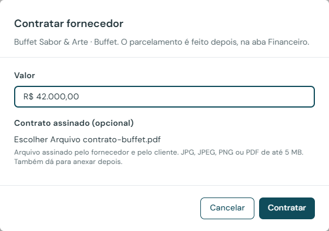
Contratar fornecedor: valor e contrato assinado.
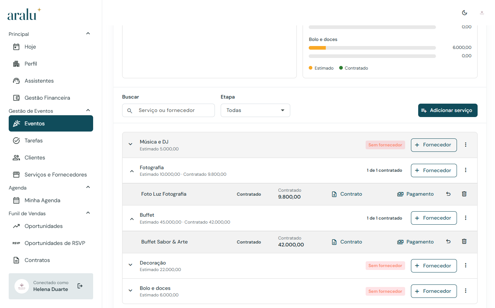
Serviços com fornecedores contratados.
Mais ações
• Adicionar serviço (topo da lista) inclui serviços do catálogo que o modelo não trouxe.
• O menu ⋮ do serviço tem Valor estimado e subitens (por exemplo, dividir o buffet em comida, bebida e garçons: a soma vira o estimado) e Excluir serviço.
• Um serviço pode ter vários fornecedores (por exemplo, dois orçamentos de decoração); o contratado do serviço é a soma dos contratados.
• Na linha do fornecedor: Contrato (anexar, substituir, abrir ou excluir), Pagamento (vai para a aba Financeiro), Voltar para orçamento e excluir. Com pagamento registrado, voltar e excluir ficam bloqueados.
• Se o estimado passar do orçamento, a barra fica em alerta com “Acima do orçamento em R$ X”.
• Os filtros Buscar e Etapa ajudam em eventos com muitos serviços.
Resultado esperadoContratado R$ 51.800,00; o gráfico “Por serviço” mostra estimado e contratado lado a lado. Buffet e Fotografia aparecem como “1 de 1 contratado”.
Checklist do capítulo 17
Indicadores e gráficos conferidos
Buffet contratado com contrato anexado
Fotografia contratada
Parte 3 · Capítulo 18Pagando fornecedores
ContextoO buffet aceitou entrada de 30% e o restante em quatro parcelas. Helena paga a entrada em 10/12/2026 e guarda o comprovante no sistema.
ObjetivoParcelar o pagamento do buffet, marcar a entrada como paga e anexar o comprovante.
Abra a aba Financeiro do evento. Cada fornecedor contratado é um pagamento, com totais de contratado, pago e a pagar.
No Buffet, clique em Parcelar e preencha conforme a tabela. Clique em Salvar parcelamento.
Abra as parcelas (Expandir parcelas) e marque a caixa da Entrada: ela passa a Paga.
Clique em Comprovante ao lado da entrada e envie o arquivo. Um novo arquivo substitui o anterior.
Para a Fotografia, que será paga à vista, use Marcar pago quando pagar e anexe o comprovante.
Campo
Valor
Número de parcelas
4
Vencimento da 1ª parcela
10/01/2027
Entrada
Com entrada
Valor da entrada / Data
R$ 12.600,00 / 10/12/2026
Resultado: entrada de R$ 12.600,00 + 4 parcelas de R$ 7.350,00
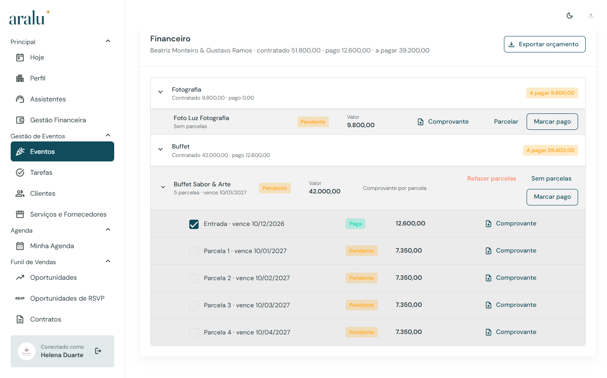
Buffet parcelado, com a entrada paga.
Mais ações
• Refazer parcelas: se já houver parcela paga, o botão e o aviso ficam em vermelho, e as parcelas novas nascem todas pendentes e sem comprovante.
• Sem parcelas volta ao pagamento único. Desfazer volta um pagamento a pendente.
• Exportar orçamento baixa uma planilha do orçamento do evento.
• A tela Hoje mostra em Pagar a fornecedores o que vence na semana.
Resultado esperadoNo cabeçalho: contratado 51.800,00 · pago 12.600,00 · a pagar 39.200,00.
Checklist do capítulo 18
Buffet parcelado
Entrada paga com comprovante
Parte 3 · Capítulo 19Os contratos do evento
ContextoA Foto Luz mandou o contrato assinado. Helena quer ver, num só lugar, todos os contratos de fornecedores deste casamento.
ObjetivoConsultar e enviar contratos de fornecedores na aba Contratos.
Abra a aba Contratos do evento. Cada serviço mostra quantos contratos já foram enviados.
No Buffet, veja o arquivo com Enviado por (Organizadora ou Cliente) e Data, e use Abrir ou Baixar.
Na Fotografia (“Nenhum contrato enviado”), clique em Enviar contrato e escolha o PDF.
Se o fornecedor mandar uma versão corrigida, use Nova versão: fica só a atual.
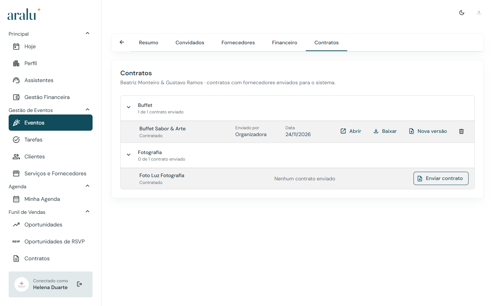
Aba Contratos do evento.
Checklist do capítulo 19
Contrato do buffet aberto
Contrato da fotografia enviado
Parte 3 · Capítulo 20O link do cliente
ContextoBeatriz quer acompanhar os pagamentos aos fornecedores (parte deles ela mesma paga) e cadastrar os convidados da família do Gustavo. Helena gera um link exclusivo do evento, sem senha.
ObjetivoGerar o link do cliente, liberar financeiro e convidados e ver como a cliente usa.
No Resumo, clique em Mais › Link do cliente e em Gerar link.
Use Copiar e envie à Beatriz.
Ligue O cliente acessa o financeiro do evento e O cliente cadastra os convidados. As duas opções nascem desligadas.
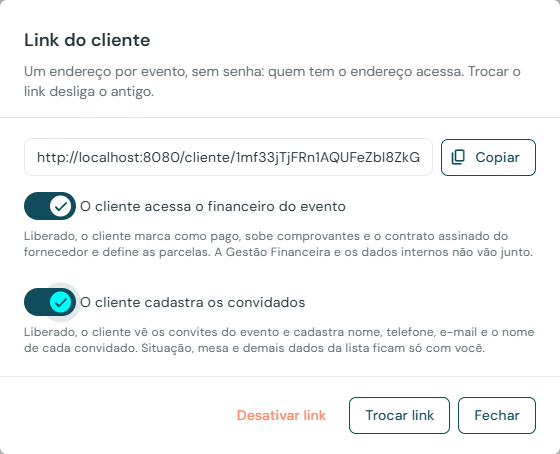
Link do cliente com financeiro e convidados liberados.
Como a cliente vê
Abra o link numa janela anônima. A página mostra o nome do casal e a data, com as abas Financeiro e Convidados.
No Financeiro, a cliente vê contratado, pago, a pagar e os pagamentos por mês. Ela pode marcar parcelas como pagas, enviar comprovantes, enviar o contrato assinado de um fornecedor e definir parcelas.
Em Convidados, clique em Novo convite e cadastre o convite abaixo, marcando Paulo como convidado principal. Clique em Salvar convite.
Nome do convite
E-mail
Convidados
Tios do Gustavo
tios.ramos@email.test
Paulo Ramos (principal, (11) 95555-2222) e Sandra Ramos
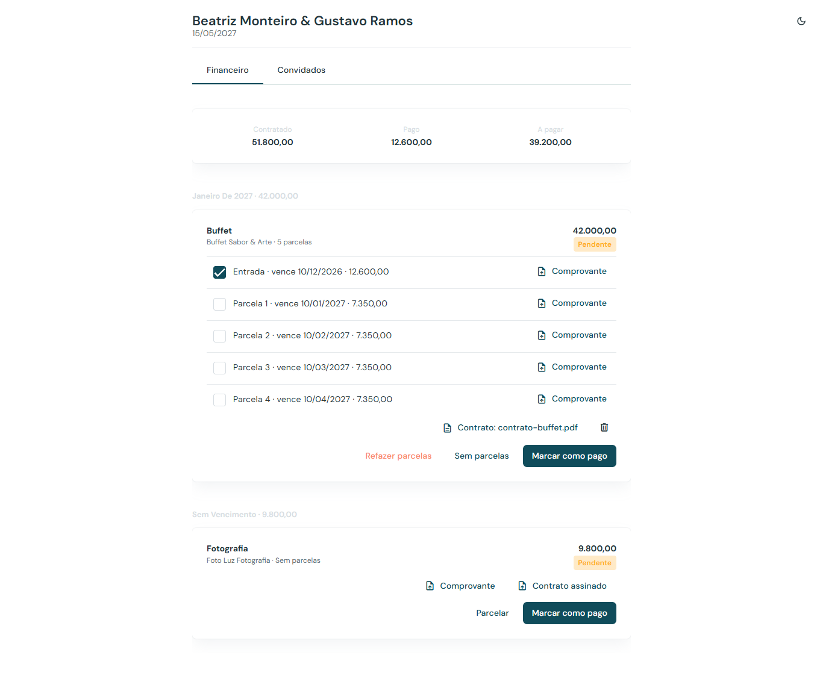
A área do cliente, aberta pelo link.
O que a cliente não vêA Gestão Financeira da Helena, o contrato da Beatriz com o Ateliê, as tarefas e os valores estimados ficam só com a assessoria. O que a cliente envia aparece para a Helena na aba Financeiro e na aba Contratos (com “Enviado por: Cliente”). Trocar link desliga o endereço antigo; Desativar link encerra o acesso.
Checklist do capítulo 20
Link gerado e liberado
Cliente viu o financeiro
Cliente cadastrou “Tios do Gustavo”
Parte 3 · Capítulo 21Convidados e confirmação de presença
ContextoFaltando três meses, é hora de enviar convites e controlar as confirmações (RSVP). A família da Beatriz recebe o convite com link e QR code, confirma pelo celular e um primo diz que pretende casar nos próximos dois anos: um novo cliente em potencial para a Helena.
ObjetivoCadastrar convites, definir prazo e data de envio, receber confirmações e transformar um convidado em oportunidade.
21.1 Cadastrar convites
Abra a aba Convidados do evento. Observe os cartões Pendentes, Confirmados e Não confirmados.
Clique em Novo convite. Um convite reúne quem recebe junto, como uma família.
Preencha Nome do convite e E-mail. Para cada pessoa, preencha o nome e use Adicionar convidado. Marque o Convidado principal: ele recebe as comunicações e precisa de telefone.
Clique em Salvar convite.
Nome do convite
E-mail
Convidados
Família Monteiro
familia.monteiro@email.test
Ricardo Monteiro (principal, (11) 95555-1111), Cláudia Monteiro, Lucas Monteiro
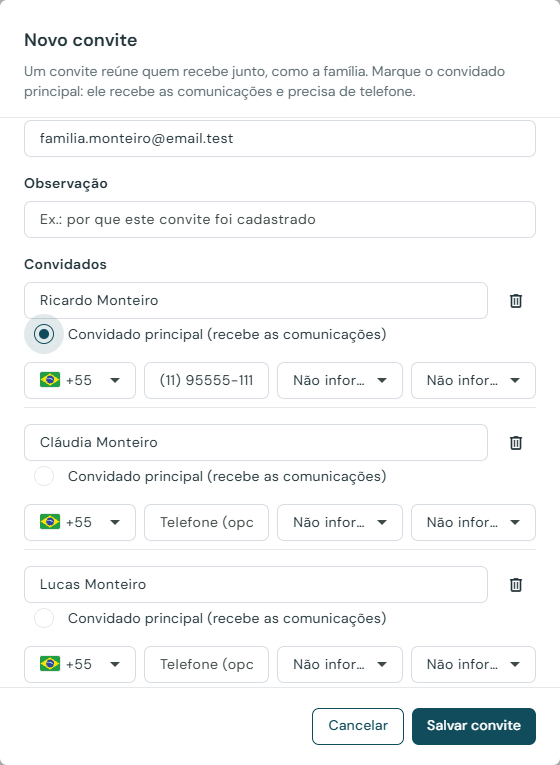
Novo convite com convidado principal.
Importar planilhaPara listas grandes, clique em Planilha padrão, preencha a planilha e use Importar. Antes de gravar, a Aralu mostra as linhas inválidas que serão ignoradas.
21.2 Prazo e data de envio
Clique em Prazo de confirmação, preencha Data limite = 15/04/2027 e clique em Salvar. Depois dessa data, o link do convite mostra que expirou.
Clique em Data de envio, preencha 10/02/2027 e clique em Salvar.
21.3 Enviar o convite
Na linha do convite há Copiar link de RSVP, Baixar QR Code e Enviar pelo WhatsApp, além de editar e excluir. A seta à esquerda expande os convidados.
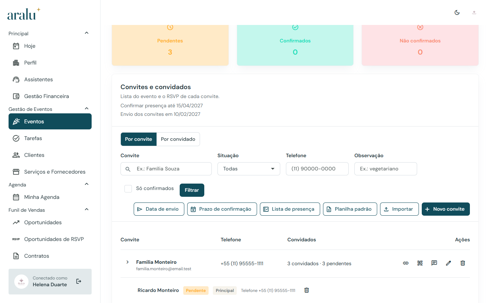
Lista de convites com as ações de envio.
21.4 O convidado confirma
Abra o link de RSVP da Família Monteiro numa janela anônima (de preferência no celular).
Marque Confirmado para Ricardo e Cláudia e Não comparecerá para Lucas.
Marque Pretendo realizar um evento nos próximos dois anos e clique em Enviar.
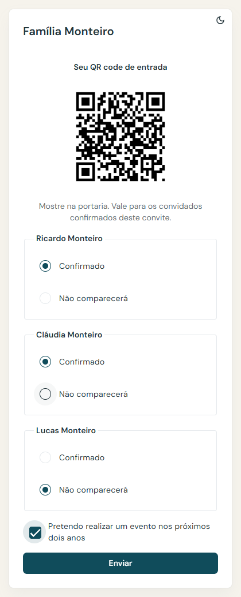
Depois de confirmar, a página mostra o QR code de entrada.
A página passa a mostrar Seu QR code de entrada, que vale para os confirmados do convite no dia do evento.
21.5 Oportunidades de RSVP
Abra Funil de Vendas › Oportunidades de RSVP. A Família Monteiro aparece porque marcou a intenção de fazer um evento.
Use Gerar oportunidade para criar um lead no funil (e recomeçar o ciclo do capítulo 7), Contatar para registrar o contato ou Descartar.
Depois do prazoSe um convidado pedir para confirmar depois da data limite, edite o convite e marque Aceitar confirmação pelo link após o prazo: o link volta a funcionar só para esse convite.
Resultado esperadoDois convites no evento (um da Helena e um da cliente). Família Monteiro com 2 confirmados e 1 que não comparecerá. A aba mostra o prazo de confirmação e a data de envio.
Checklist do capítulo 21
Convite criado com convidado principal
Prazo e data de envio definidos
RSVP respondido e QR de entrada exibido
Convidado apareceu em Oportunidades de RSVP
Parte 4 · Capítulo 22A portaria no dia do casamento
ContextoSábado, 15 de maio de 2027. Pedro Ramos, padrinho e primo do Gustavo, vai ficar na entrada do Espaço Villa Jardim com o celular conferindo quem chega. Ele não tem acesso à Aralu: recebe só o link da portaria.
ObjetivoGerar o link da portaria, registrar entradas e conferir a lista de presença.
No Resumo, clique em Mais › Link da portaria, em Gerar link, e copie o endereço para o Pedro.
No celular, o link mostra o evento e os totais Confirmados, Já entraram e Faltam, com a lista e a busca Buscar convite ou convidado.
Quando a família chega, toque em Escanear QR code e aponte para o QR do convidado, ou encontre o convite na lista e toque em Abrir.
Os confirmados aparecem marcados (quem não confirmou não pode entrar). Desmarque quem não veio e toque em Confirmar presença.
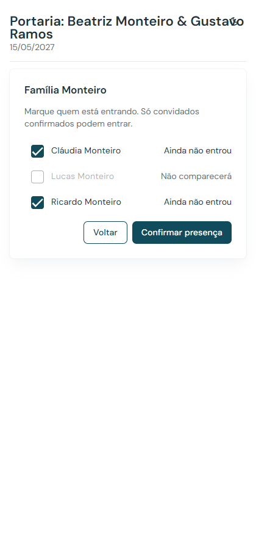
Portaria: marcando quem está entrando.
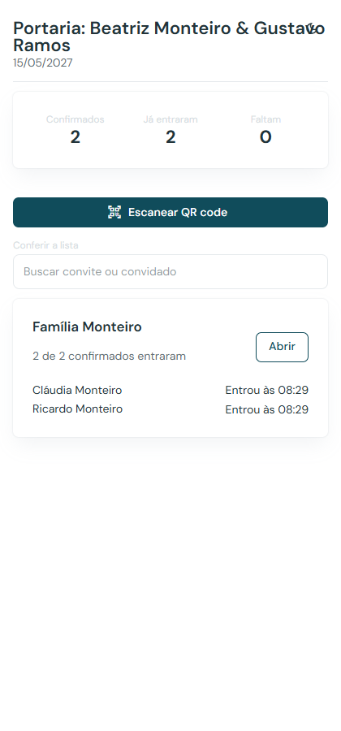
Depois da confirmação: “Entrou às HH:mm” e totais atualizados.
Helena confere em tempo real: aba Convidados › Lista de presença, com a coluna Compareceu (hora da entrada ou “Não”).
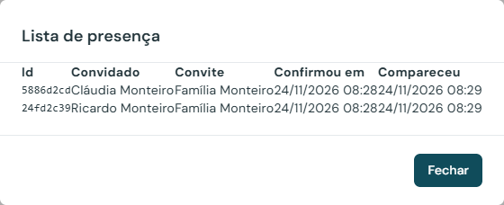
Lista de presença com confirmações e horários de entrada.
DicaSe a câmera for negada no celular, a portaria avisa, e dá para achar o convite pela lista. Ao fim do evento, use Trocar o link da portaria para desligar o endereço antigo.
Checklist do capítulo 22
Link da portaria gerado
Entrada da Família Monteiro registrada
Lista de presença conferida
Parte 4 · Capítulo 23Depois da festa
ContextoO casamento foi um sucesso. Na semana seguinte, Helena fecha as contas, salva o que aprendeu num modelo melhorado, conclui o evento e olha os números do Ateliê.
ObjetivoQuitar recebimentos e pagamentos, salvar como modelo, concluir o evento e consultar relatórios e estatísticas.
23.1 Fechar as contas
Em Gestão Financeira › Parcelas do contrato, registre com Recebi as parcelas restantes da Beatriz. Com tudo recebido, o contrato mostra o selo Quitado.
Na aba Financeiro do evento, marque como pagas as parcelas restantes do buffet e o pagamento da fotografia.
23.2 Salvar como modelo
No Resumo, clique em Mais › Salvar como modelo. A janela sugere o nome “Modelo — nome do evento” e informa quantas tarefas e serviços vão para o modelo.
Em Nome, digite “Casamento completo v2” e clique em Salvar (ou Salvar e abrir, para revisar o modelo na hora).
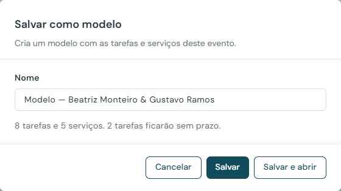
Salvar o evento como modelo.
23.3 Concluir o evento
Clique em Mais › Concluir evento e confirme em Concluir.
Em Eventos, o casamento sai de Em andamento e vai para a aba Concluído.
23.4 Relatórios e estatísticas
Abra Funil de Vendas › Relatórios, informe Início e Fim do período e clique em Atualizar.
Navegue pelos 9 relatórios: Negócios fechados x perdidos, Por fonte, Por serviço/produto, Por estágio, Por região, Por responsável, Por data prevista, Por motivos de descarte e Oportunidades de RSVP. Use Exportar para baixar.
Em Eventos, clique em Estatísticas para ver os números dos eventos da assessoria.
Volte à tela Hoje: os números do funil e da carteira estão atualizados.
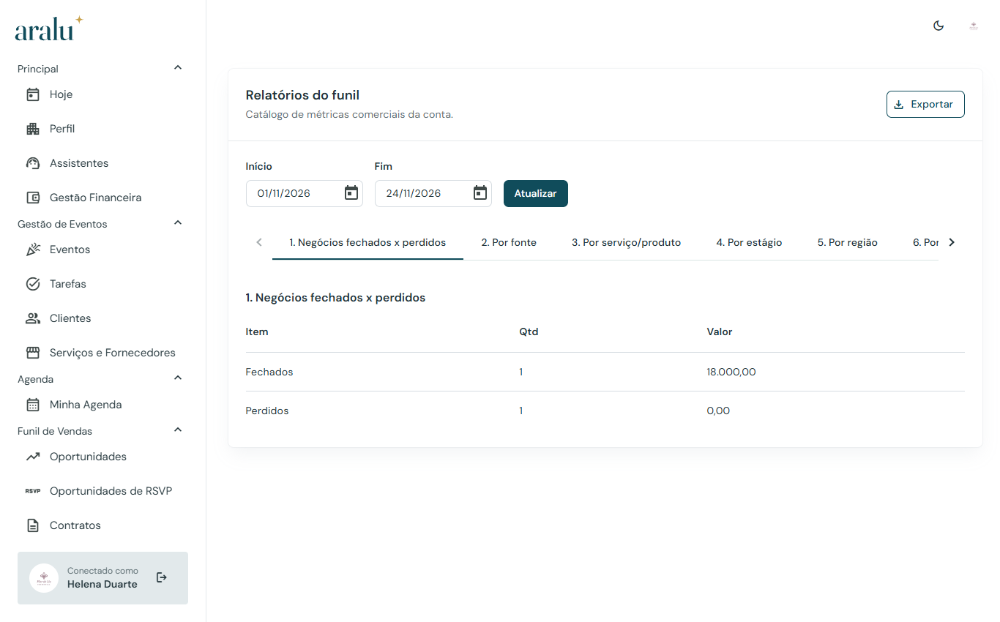
Relatórios do funil: 1 negócio fechado (Beatriz, R$ 18.000) e 1 perdido (Larissa).
Resultado esperadoContrato da Beatriz quitado, fornecedores pagos, “Casamento completo v2” na lista de Modelos de evento e o casamento na aba Concluído. A jornada está completa: o lead que entrou pelo formulário no capítulo 7 virou cliente, contrato, evento e um casamento realizado.
Checklist do capítulo 23
Recebimentos e pagamentos quitados
Modelo v2 salvo
Evento concluído
Relatórios consultados
Capítulo complementar ATrabalhando com assistentes
ContextoCom mais casamentos fechados, Helena contrata a assistente Bianca Souza. Ela quer que a Bianca veja só os eventos em que trabalha e não veja o financeiro.
ObjetivoConvidar uma assistente, definir permissões e vinculá-la a um evento.
Abra Principal › Assistentes e clique em Convidar assistente.
Preencha os campos da tabela e clique em Convidar. A Bianca recebe um e-mail com o convite, cria a senha e passa a entrar com o próprio e-mail.
Para que ela veja o casamento da Beatriz, abra o evento, clique em Editar e escolha-a no campo Assistentes do evento. Depois, atribua tarefas a ela no campo Responsáveis.
Campo
Valor
Nome
Bianca Souza
E-mail
bianca@atelieflordelis.test (use um e-mail real)
Celular / Nascimento
Opcionais
Pode ver o financeiro
Não
Eventos que ela vê
Só os eventos em que ela for marcada (a outra opção é Todos os eventos)
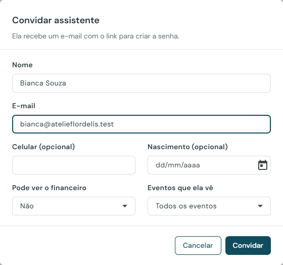
Convidar assistente.
O que muda para a assistenteA assistente não vê Perfil, Assistentes e Modelos de Contrato. Sem permissão de financeiro, também não vê Gestão Financeira nem a aba Financeiro dos eventos; se tentar abrir, aparece “Você não tem acesso a esta área”. As mudanças de permissão valem no próximo clique. A assistente só exclui o que ela mesma criou. Ao remover o acesso, o que ela criou continua na conta.
Capítulo complementar BMinha conta, senha e aparência
No menu da conta (canto superior direito), clique em Minha conta para ver com qual e-mail você entrou e trocar a senha.
O botão de lua/sol, ao lado, alterna entre modo escuro e modo claro.
Para sair, use Sair no menu da conta ou o ícone ao lado do seu nome no rodapé do menu lateral.
No menu lateral, clique no nome de um grupo para recolhê-lo ou abri-lo; a Aralu lembra a sua escolha neste navegador.
No celular, o menu lateral abre pelo ícone ☰, e a barra inferior dá acesso a Hoje, Eventos, Novo evento, Financeiro e Mais.
Capítulo complementar COutras ações úteis
Situação
Onde e como
Reaproveitar um modelo com pequenas mudanças
Em qualquer lista de modelos, use o ícone Clonar. No editor do modelo de evento também há Clonar e Excluir.
Trazer um modelo de evento pronto de um arquivo
Modelos de Evento › Importar modelo.
Um evento foi cancelado pelo cliente
No Resumo, Mais › Cancelar evento. Ele vai para a aba Cancelado de Eventos.
Encontrar eventos
Em Eventos, use Nome, Tipo, De/Até e Tag e clique em Filtrar (Limpar desfaz).
Cliente sem evento cadastrado por engano
Clientes, ícone Excluir. A oportunidade continua em Contratado, sem o selo de cliente.
Cadastrar cliente sem passar pelo funil
Clientes › Novo cliente, com as abas Dados pessoais, Redes e Endereço.
Contrato com o cliente cancelado
Contratos do funil, ícone Cancelar contrato; fica na aba Cancelados.
Tarefa do funil concluída por engano
Aba Completas, reabrir a tarefa.
Copiar o link da tela de aceite de uma oportunidade
Na oportunidade, bloco Dados para contrato, Copiar link da tela de aceite (só depois de enviar o orçamento por link).
Itens “em breve”
Os atalhos Anexos, Equipe escalada e Lembretes de aniversários, no topo de Eventos, ainda estão em desenvolvimento.
FechamentoChecklist final da jornada
Etapa
Funcionalidades usadas
✓
Preparação
Cadastro, Hoje, Perfil, Modelos de Serviços, Modelo de Orçamento, Modelos de Contrato, Serviços da conta, Fornecedores, Modelos de Briefing, Roteiro, Cronograma, Inspirações, Mensagens e Evento, Gerenciar estágios
☐
Comercial
Link do lead, Nova oportunidade, Editar oportunidade, Briefing, Retorno, Tarefas do Funil, Mover/Filtrar/Exportar, Orçamentos com parcelas, Proposta por link, Aceite, Descartar, Contratos, Virar cliente, Clientes
☐
Financeiro da assessoria
Gestão Financeira, Cobrar, Recebi
☐
Planejamento
Criar evento, Aplicar modelo, Editar evento, Tarefas com checklist, Tarefas (geral), Minha Agenda, Fornecedores, Contratar, Financeiro do evento, Contratos do evento, Link do cliente, Convites, Prazo e Data de envio, RSVP, Oportunidades de RSVP
☐
Grande dia
Link da portaria, Escanear QR/Confirmar presença, Lista de presença
☐
Pós-evento
Quitação, Salvar como modelo, Concluir evento, Relatórios, Estatísticas
☐
Complementares
Assistentes, Minha conta, Modo escuro, Clonar, Importar, Cancelar evento